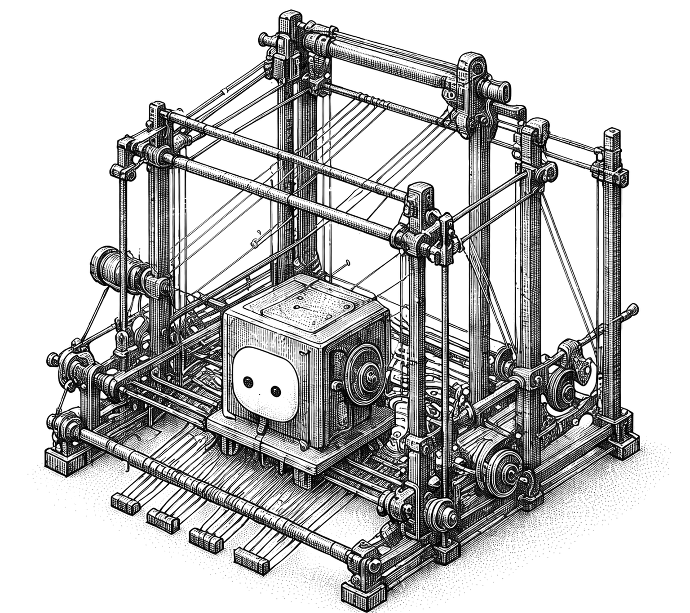
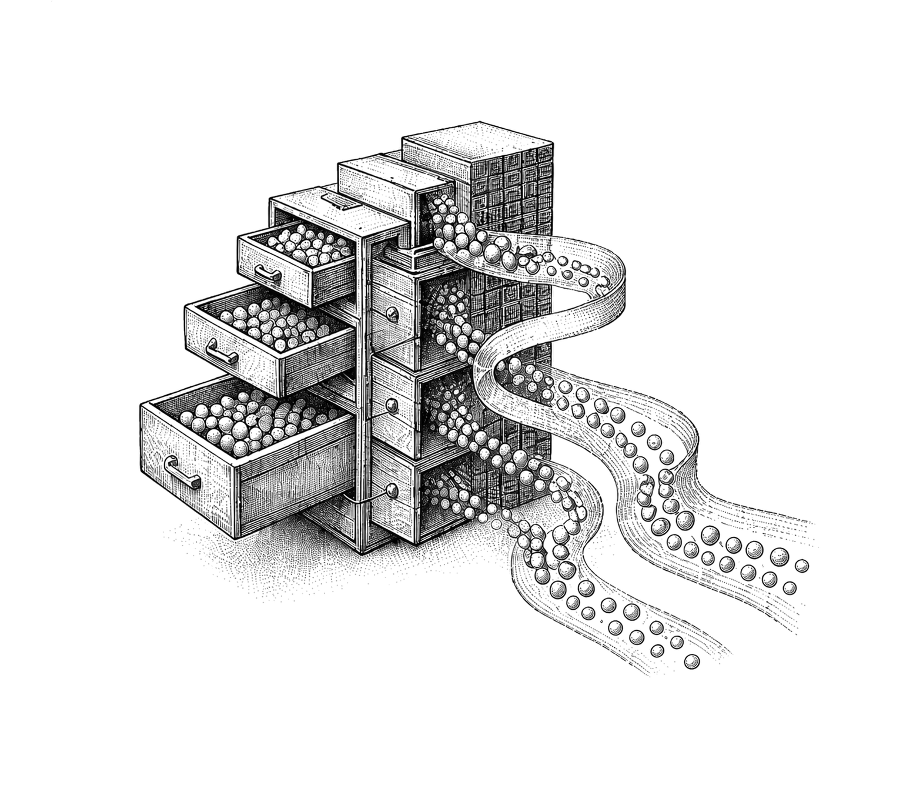
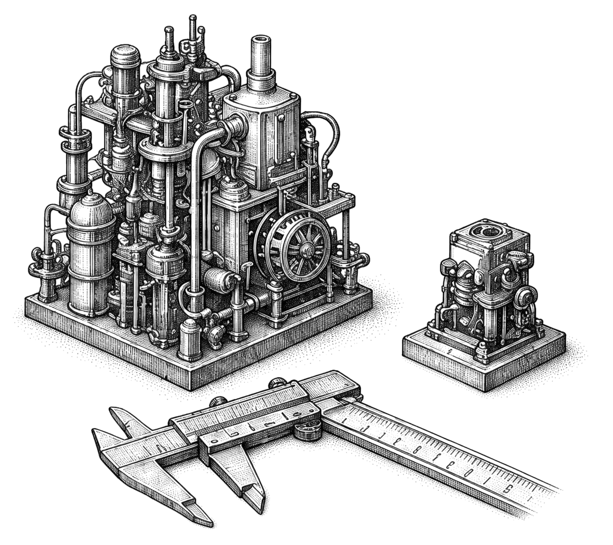
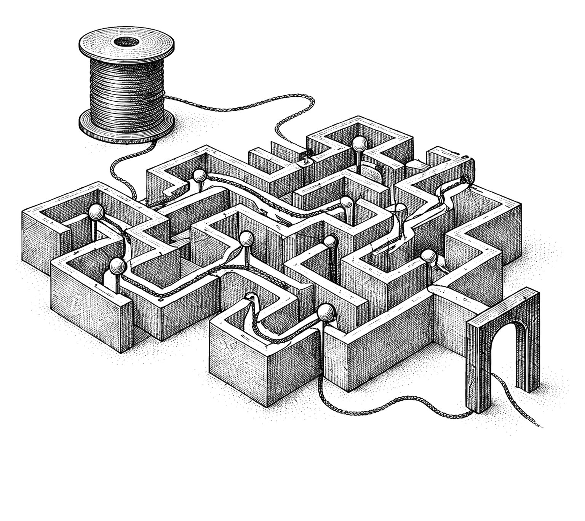
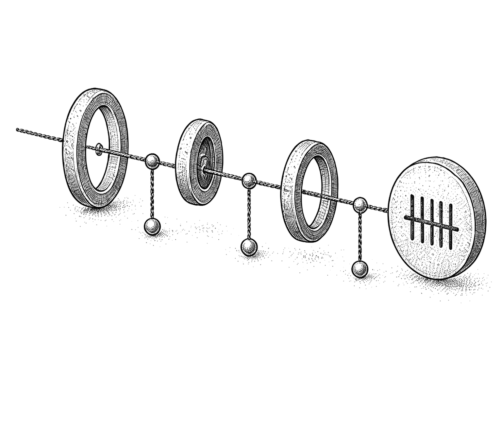
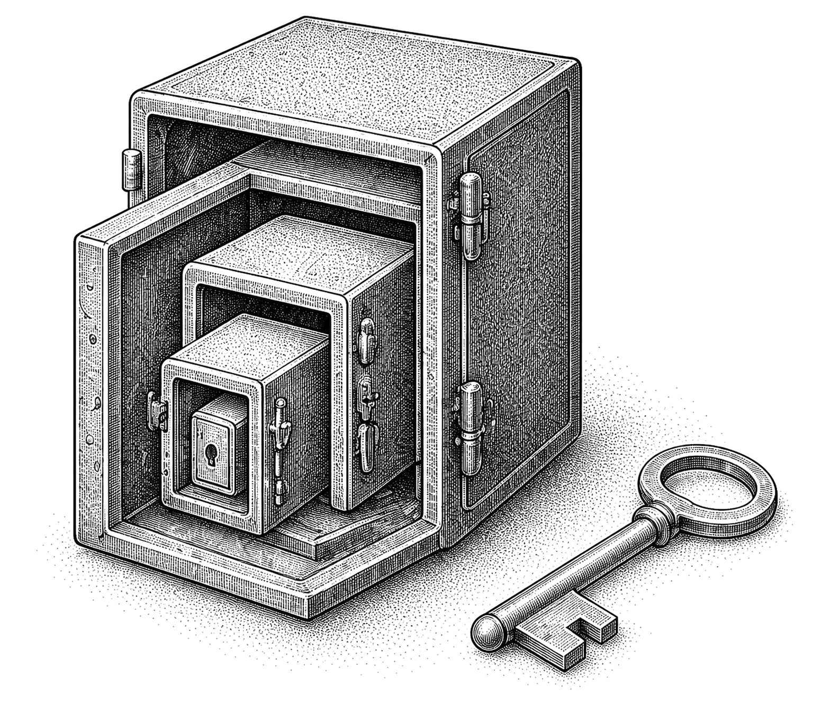
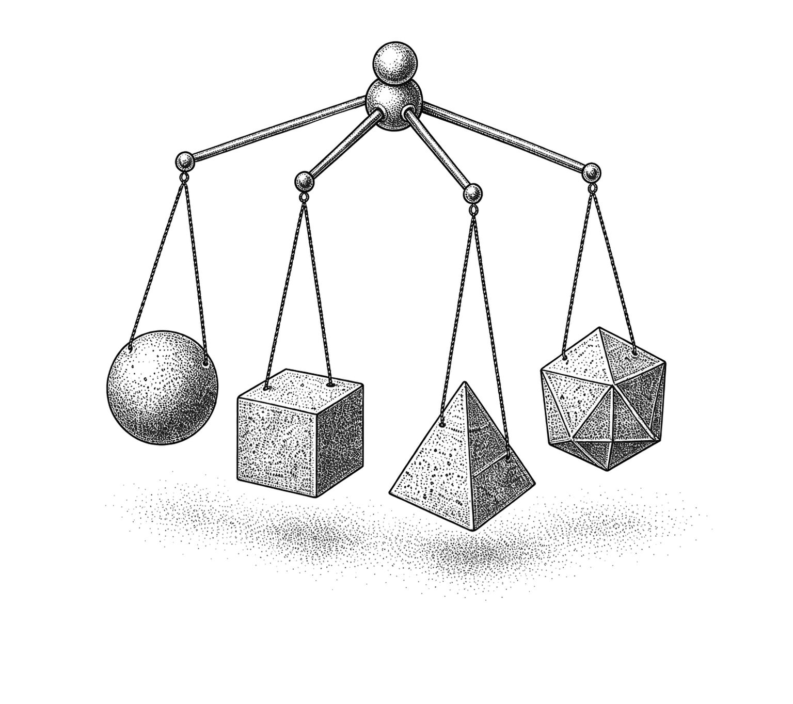

Production AI Engineering
A Handbook for Building Reliable LLM Systems
Michael Long, surfaces.systems
September 30, 2026 · Version 1.4.0
Next version review
Site + PDF
Scheduled for .
Site and PDF updates publish together after manual review.
Engineering the whole system
Production AI engineering is a systems discipline. This handbook lays out an operating model that connects the techniques instead of treating each one as an isolated fix. The operating premise is simple:
A model can propose an answer or action. The surrounding system decides whether and how it should proceed, and remains responsible for the outcome.
Optimize for a successful, policy-compliant user outcome that meets service-level objectives (SLOs) for latency and cost. A prompt or model call is only one part of that outcome.
Navigation
Contents
- 01 Build the System Around the Model 1
- 02 Treat Context as a Budget 5
- 03 Prefill and Decode Are Different Jobs 11
- 04 Choose the Optimization That Fits 18
- 05 Turn Model Output into a Contract 23
- 06 Put Clear Limits on Agents 31
- 07 Keep Retrieval Grounded 38
- 08 Make Evals the Release Gate 45
- 09 Trace the Whole User Journey 50
- 10 Build Safety into the Architecture 56
- 11 Choose What to Change 63
- 12 Design for Production Failure 67
- A Notes and Sources 74
- I Index of Terms 88
Chapter 01
Build the System Around the Model
A production AI system succeeds when the full workflow delivers the right outcome, follows policy, and stays inside its latency and cost targets.

1.1 The full system
Each layer has a clear responsibility:
Scroll table horizontally
| Layer | Primary responsibility | Typical failure |
|---|---|---|
| Product contract | Define success, SLOs, risk, and degraded behavior | Optimizing a proxy that users do not value |
| Harness | Orchestrate state, tools, retries, budgets, and termination | Runaway loops or duplicate side effects |
| Context | Select the smallest high-signal authorized state for this step | Context rot, stale facts, or contamination |
| Retrieval and memory | Supply current, attributable external knowledge | Irrelevant, stale, or unauthorized evidence |
| Model and serving | Produce useful tokens efficiently | Queueing, KV pressure, or quality loss |
| Validation and policy | Turn probabilistic proposals into safe actions | Valid JSON with invalid business meaning |
| Evals and observability | Detect regressions and explain production behavior | Silent quality, cost, or safety drift |
Sources [AGT-01] [CTX-01] [OBS-01]Author synthesis: the cited sources inform this layered operating model.
1.2 Prompt engineering is one part of the harness
Prompt engineering handles the wording and structure of instructions. Context engineering selects and maintains every token supplied for each model step. Harness engineering runs the software system around the model.
Scroll table horizontally
| Discipline | Controls | It does not control by itself |
|---|---|---|
| Prompt engineering | Instruction clarity, examples, response guidance | State, permissions, retries, side effects |
| Context engineering | Instructions, history, retrieved evidence, tool definitions, summaries, token allocation | Execution safety or end-to-end termination |
| Harness engineering | State machine, routing, tools, validators, budgets, caches, telemetry, recovery | The model's intrinsic capability ceiling |
A production harness needs to own:
- Bind every run.
- Request identity, tenant, authorization, and policy version.
- Prompt, tool, schema, model, and retrieval-index versions.
- Control execution.
- Deterministic context assembly and compaction.
- Model routing and fallback compatibility.
- Parse, schema, semantic, and policy validation.
- Retry classification and idempotency.
- Bound and account for outcomes.
- Time, token, tool, turn, cost, and risk budgets.
- Success, refusal, blocked, degraded, and failed terminal states.
- Traces, outcome metrics, and cost attribution.
Enforce any rule about safety, money, permissions, or termination in code. A sentence in a system prompt can steer the model, but it cannot serve as a security boundary.
Sources [AGT-01] [TOOL-01] [AUTH-01]Author synthesis: the taxonomy separates prompt, context, and harness responsibilities.
Chapter 02
Treat Context as a Budget
Context is finite. Choose the smallest set of instructions, state, evidence, and tools the model needs for the current step.

2.1 Context engineering, not long prompts
Treat context as finite working memory with diminishing marginal value. Adding more can increase prefill cost and time while drawing effective attention away from the material that matters. A long context window does not justify loading everything into it.
Build the context in this order:
- Invariant contract: role, hard policies, output/tool protocol, and current schema version.
- Current task: the user's latest intent and explicit constraints.
- Authorized state: only the tenant, resource, and conversation state needed now.
- Fresh evidence: retrieved passages with source, version, timestamp, and access metadata.
- Available actions: only relevant, clearly distinct tool contracts.
- Useful history: compact decisions and unresolved state, not an unfiltered transcript.
- Examples: only when they improve the target eval more than the tokens and anchoring risk cost.
Practical rules:
- Optimize signal per token, not context-window utilization.
- Retrieve details just in time. Keep durable decisions in explicit state.
- Label and separate untrusted content from instructions, but do not mistake roles, delimiters, or typed fields for isolation. Enforce a deterministic source-to-sink policy so data derived from an untrusted source cannot authorize actions, expand permissions, or select new egress destinations.
- Keep provenance attached through summarization. A summary without its source and version creates a future stale-fact bug.
- Use structured state instead of repeatedly asking the model to infer state from prose.
- Give tools concise, non-overlapping names and descriptions. Expose only the tools relevant to the current step.
- Version and hash the context manifest so the team can reproduce a bad result.
- Test context ordering and truncation. Models can use relevant information less reliably when it is buried in a long input, a behavior documented by the Lost in the Middle[CTX-02] study.
Treat a token budget as a policy. There is no universal percentage. One practical version looks like this:
- fixed contract
- hard cap; cache-friendly prefix
- task and state
- enough to make the current decision
- retrieved evidence
- top-ranked, deduplicated, attributable
- tool definitions
- relevant tools only
- working history
- compacted decisions and open questions
- output reserve
- protected before adding more input
When the budget gets tight, remove redundant and low-confidence material first. Compress authoritative instructions or evidence only after those cuts.
Treat provider-managed compaction as a state transition, not invisible housekeeping. Persist the signed summary block exactly as returned. Remove only the messages the provider says it replaced, and keep system instructions and tool definitions compatible across the handoff. Account for the summarization request separately when usage is reported outside the top-level totals. Compaction can silently omit details and remove earlier images, documents, uploads, or URL content. Preserve durable decisions and required evidence outside the transcript, and advance the conversation only after the compacted continuation succeeds. Anthropic's compaction contract[CTX-03] makes those failure modes explicit.
2.2 Four caches that must not be confused
Scroll table horizontally
| Cache | Key and value | Main benefit | Main risk | Invalidation/isolation |
|---|---|---|---|---|
| Exact response cache | Exact normalized request to completed response | Avoids the entire workflow | Stale response if hidden state changed | Include every response-affecting version and authorization dimension |
| Prompt/prefix cache | Exact rendered-token prefix to reusable prefill work | Can lower TTFT and billed input cost when read/write pricing and reuse frequency are favorable | Small serialization changes destroy hits; provider write pricing and retention implications | Stable prefix first; model/prompt scoped; follow provider data controls |
| Semantic response cache | Embedding-near request to prior response | Captures paraphrases and reduces full calls | False positive can return a plausible but wrong, stale, or unauthorized answer | Tenant/principal, state, model, prompt, corpus, policy, locale, and freshness scoped |
| Runtime KV cache | Per-layer attention keys and values for an active sequence | Avoids recomputing tokens already processed within that sequence | GPU memory exhaustion and cross-request leakage if ownership is mishandled | Request ownership, active block pinning, preemption, reclamation, and quotas |
Prompt caching and semantic caching do different work:
- Prompt/prefix caching is exact and reuses prefill work. It skips recomputation for an identical rendered prefix, while still running prefill for the uncached suffix and a full decode. Put stable system instructions, examples, and tool definitions first. Put user-specific material later. Small differences in tokenization, message order, tool serialization, or timestamps can destroy a hit. The cache can reduce TTFT and billed input cost only when provider-specific read/write pricing and reuse frequency make the tradeoff worthwhile.
- Semantic caching is approximate and reuses an answer. It decides whether a new request is close enough to an old one to return the old answer. The reuse decision acts as both a quality classifier and a security classifier. The critical metric is false-hit rate by risk slice, not hit rate alone.
Use semantic caching only when two paraphrased requests should receive the same answer. Avoid it, or require verification, for personalized, permission-sensitive, rapidly changing, transactional, high-stakes, and multi-turn-dependent answers. Azure's own semantic-cache policy warns that similarity hits can be incorrect, outdated, or unsafe; see the official policy reference[CACHE-02].
A defensible application cache key or namespace usually needs:
- Request scope
- tenantprincipal/ACL scopetask typenormalized state
- Runtime contract
- model snapshotprompt versiontool-contract versionoutput-schema version
- Policy
- safety-policy version
- Retrieval context
- retrieval corpus/index versionlocalefreshness window
Track cache and token hit rates; false-hit, stale-hit, and eviction rates; cache age; latency and cost saved; and cross-scope rejection count. Never share private semantic responses globally based on embedding similarity.
Cache breakpoints determine which shared prefix can actually be reused. Where the API exposes them, place and test an eligible boundary after the stable prefix. An implicit boundary after a changing suffix may never reuse that prefix. Verify with requests that keep the prefix fixed while changing the suffix, and inspect cache-read and cache-write usage. OpenAI documents this distinction[CACHE-01] for its newer caching contract. Include writes, uncached suffixes, compaction, and retention in the net-cost calculation.
Sources [CACHE-01] [CACHE-02] [SERV-01]Author synthesis: the four caches are grouped by what they reuse and how they fail.
Chapter 03
Prefill and Decode Are Different Jobs
Prefill and decode use the hardware differently. The serving plan has to account for both.

3.1 Prefill and decode optimize differently
Autoregressive inference has two phases that place different demands on the system.
Scroll table horizontally
| Property | Prefill | Decode |
|---|---|---|
| Work | Process all input tokens and populate KV state | Generate one next token per active sequence per step |
| Parallelism | High within the prompt; large matrix operations | Sequential across output positions; smaller per-step operations |
| Common bottleneck | Usually compute-bound once prompt length or batch reaches accelerator saturation | Usually weight/KV-bandwidth-bound at low-to-moderate batch; can become compute-bound at high batch |
| User metric | Prefill contributes to TTFT, which also includes queueing, retrieval, cache, and network time | Decode cadence contributes to mean TPOT and the distribution of inter-token latencies and stalls |
| Helpful techniques | Safe context reduction, prefix cache, efficient kernels, prefill batching, chunking, or disaggregation | Continuous batching, efficient kernels, quantization, speculative decoding |
Break the latency budget into its actual components:
Before generation
Generation and execution
Track p50, p95, and p99 for end-to-end latency, queue time, TTFT, TPOT/ITL, and tool latency. A low average can still hide an unusable tail.
Chunked prefill can reduce interference with active decodes and improve tail inter-token latency. Chunking can also increase TTFT for the long prompt being split. Use prefill/decode disaggregation only when its SLO benefit outweighs the cost of duplicated model weights, KV transfer, interconnect, routing, and operations.
3.2 KV cache management and memory pressure
For a conventional transformer, use this approximation for KV footprint per sequence:
Grouped-query or multi-query attention reduces KV_heads, which can dramatically reduce the footprint. For example, 80 layers, 8 KV heads, head dimension 128, and BF16 state use about 320 KiB per token, or roughly 10 GiB for a 32K-token sequence. Exact layouts and engine overhead vary. The scaling behavior does not: tokens, concurrency, and precision multiply.
Watch for memory pressure in:
- rising KV utilization and allocation failures;
- evictions, preemption, recomputation, or CPU offload;
- falling prefix-cache hit rate under churn;
- queue growth even when compute looks underutilized;
- throughput cliffs and out-of-memory failures on long-tail prompts;
- one tenant's long contexts starving other tenants.
Apply the controls in this order:
- Enforce admission control and explicit maximum input/output lengths.
- Reserve memory for active decodes and protect latency-critical traffic classes.
- Use paged/block allocation to reduce fragmentation. Prefix sharing is a separate, explicitly keyed capability layered on top.
- Use per-tenant concurrency and KV quotas.
- Where prefix caching is enabled, reuse exact full-prefix blocks with ownership, refcounts, and copy-on-write semantics.
- Evict only refcount-zero reusable blocks. Reclaim active KV by preempting whole sequences and explicitly choosing recomputation or offload; do not apply eviction only by request age without workload evidence.
- Evaluate KV quantization or offload on long-context quality and tail latency before enabling it.
- Shed or degrade load before allowing a node-wide OOM.
The PagedAttention paper[SERV-01] applies virtual-memory-like block management to KV state. This reduces allocation waste and enables sharing. Paging manages memory more efficiently, but the underlying KV capacity limit remains.
KV retention policies decide which past state survives; paging decides how retained state is allocated. Measure retained bytes, physically allocated memory, and peak memory across the whole invocation, including prefill. A mask or eviction after prefill may reduce later state without lowering the prefill peak. Evaluate long-context evidence use with the same retention policy and workload used for memory tests. HeadWiseKV[SERV-11] illustrates these distinctions in a bounded hybrid-model study. Its results do not establish a universal quality or memory gain. Revalidate after changing the model, cache format, context distribution, or retention policy.
For bursty multi-tenant traffic, evaluate a reservation policy against real prompt-length, output-length, and arrival traces instead of reserving each request's maximum possible KV footprint. A reservation policy can admit more useful work when it protects against plausible distribution shifts and keeps an explicit overload path. Cheng et al.'s robust KV-cache reservation study[SERV-06] provides one trace-driven formulation. The formulation is a planning method, not a substitute for per-tenant quotas, active-decode reserves, or load shedding.
Sources [SERV-01] [SERV-04] [SERV-06] [SERV-11]The KV footprint example follows directly from the model architecture.
3.3 Continuous batching, paged attention, and goodput
Static batching waits for a fixed group of requests. Continuous, or iteration-level, batching releases completed sequences at each engine iteration and may admit queued work into the capacity they free, subject to token, KV, deadline, and fairness limits. Continuous batching removes static-batch head-of-line blocking, although requests can still queue. The Orca paper[SERV-02] established iteration-level scheduling as a core serving technique.
Large prefills can still stall active decodes. Chunked prefill splits prompt processing into schedulable pieces and interleaves those pieces with decode work. The tradeoff is lower decode interference and potentially longer TTFT for the split request. Sarathi-Serve[SERV-03] analyzes this prefill/decode interference and stall-free scheduling.
The scheduler needs controls for:
- maximum batched tokens and active sequences;
- prefill chunk size and prefill/decode priority;
- request class, deadline, and fairness policy;
- maximum model length and output reservation;
- prefix locality and cache-aware routing;
- preemption and load-shedding policy.
Raw tokens per second do not tell you whether the service works for users. Optimize goodput: the maximum arrival rate per provisioned GPU or resource at which the required fraction of requests satisfies both TTFT and TPOT/ITL SLOs plus the application-quality gate. A larger batch can increase throughput while pushing interactive latency past an acceptable limit.
For multi-stage agent workflows, measure task-level completion time alongside request goodput and prefix-hit rate. Evaluate dependency and critical-path progress, prefix residency, transition and preemption cost, and starvation on real traces. Optimizing prefix locality or the progress of one stage in isolation can make the complete workflow slower.
The current vLLM documentation[SERV-04] is a useful implementation reference for PagedAttention, continuous batching, prefix caching, chunked prefill, quantization, and speculative decoding. Engine defaults are starting points. Tune them against production prompt-length and output-length distributions.
Chapter 04
Choose the Optimization That Fits
Speculative decoding, quantization, and distillation solve different problems. Pick the one that matches the bottleneck and verify the quality tradeoff.

4.1 Speculative decoding, quantization, and distillation
Speculative decoding, quantization, and distillation change different parts of the inference stack and solve different bottlenecks.
Scroll table horizontally
| Technique | Changes | Best fit | Main tradeoff |
|---|---|---|---|
| Speculative decoding | A draft process proposes tokens; the target verifies several in parallel | Decode-bound, low-to-moderate batch workloads with high draft acceptance | Extra draft compute and memory can erase gains when acceptance is low |
| Quantization | Represents weights and sometimes activations/KV with fewer bits | Memory/bandwidth-constrained inference with supported kernels | Calibration and numerical error can cause task-specific tail regressions |
| Distillation | Trains a smaller student to imitate a larger teacher | Stable, narrow, high-volume tasks with governed training data and clear evals | Up-front teacher-data/training cost; broad and long-tail capabilities or teacher biases can transfer or regress |
When the rejection sampler and target-model sampling semantics are implemented correctly, speculative decoding preserves the target distribution. Use it to reduce latency, not to approximate an answer. Floating-point or batching nondeterminism still prevents any guarantee of byte-identical runs. Benchmark acceptance, draft and verification cost, TPOT, and SLO goodput at production concurrency. Low acceptance or saturated compute can make the system slower. Leviathan et al.[SPEC-01] describe the method.
Distillation changes the deployed model and usually changes its behavior. Distillation can greatly lower steady-state cost, but the target workflow first needs to be stable enough for teacher data and evals to represent production. Hinton, Vinyals, and Dean[DIST-01] describe the foundational method.
Sources [SPEC-01] [QUANT-02] [DIST-01]Author synthesis: the comparison maps each technique to the bottleneck it changes.
4.2 Quantization: formats, methods, and quality risk
AWQ and GPTQ describe quantization methods. Numeric formats are a separate choice. Always spell out the precision tuple: W8A8, W8A16, W4A16, or KV8, for example. INT8 and INT4 leave too much unspecified on their own.
Weight storage is approximately parameters × bits / 8 + scales + zero-points + unquantized modules. W4A16 reduces weight storage, but it does not shrink activations or KV. Calling a model “4-bit” therefore does not imply 4× lower total VRAM. Any latency reduction depends on the actual kernel and hardware.
Scroll table horizontally
| Choice | What it usually means | When it is attractive | Watch for |
|---|---|---|---|
| INT8 | Integer 8-bit weights and possibly activations | Broad hardware support; safer first step from FP16/BF16 | Activation outliers, calibration mismatch, unsupported fast paths |
| FP8 | 8-bit floating point, commonly E4M3/E5M2 with scaling | Newer accelerators; training or W8A8-style inference where dynamic range matters | Hardware dependence, scale management, accumulation precision |
| INT4 | Often W4A16 weight-only, though W4A8/W4A4 also exist | Model fit and bandwidth-bound decode; native low-activation kernels may also help prefill or high batch | Greater quality risk, scale/dequantization overhead, and runtime- and hardware-dependent speedups |
| AWQ | Activation-aware weight-only post-training quantization | Protecting salient weight channels without retraining | Representative activation calibration and kernel compatibility |
| GPTQ | One-shot weight quantization using approximate second-order information | Accurate 3/4-bit compression of supported decoder models | Calibration set, group size, layer sensitivity, conversion/runtime support |
Primary references: FP8 formats[QUANT-01], SmoothQuant for W8A8[QUANT-02], AWQ[QUANT-03], and GPTQ[QUANT-04].
Quality risk generally rises below 4-bit, in smaller models, on harder reasoning slices, with unrepresentative calibration, and when activation or KV outliers are aggressively quantized. The risk pattern is empirical, not guaranteed. Specific risks include:
- calibration data does not match production languages, domains, lengths, or modalities;
- the task depends on small logit margins, exact numbers, code, rare tokens, or precise tool arguments;
- activation or KV outliers are aggressively quantized;
- long-context, multilingual, rare-token, safety, or tool-use behavior is more sensitive than the aggregate benchmark suggests.
Short-context or aggregate-only evals can hide regressions. Missing native kernels can erase the performance gain even when quality holds. Benchmark the exact checkpoint, packing, runtime, hardware, batch shape, and parallelism plan.
Run every quantized candidate through the same golden and adversarial suite as the baseline. Include exact structured output, function selection and arguments, safety refusals, multilingual slices, long context, and p95/p99 latency. Measure end-to-end performance. Model file size alone proves nothing.
Sources [QUANT-01] [QUANT-02] [QUANT-03] [QUANT-04] [SERV-04]
Chapter 05
Turn Model Output into a Contract
Schemas make output parseable. Authorization, validation, idempotency, and effect checks make it safe to use.
5.1 Structured outputs: syntax is only the first gate
Constrained decoding and provider structured-output features can greatly improve syntactic conformance. Syntactic conformance does not establish whether the values are true, authorized, internally consistent, current, or safe to execute.
Treat every structured-output request as a fault-containment boundary. Cap grammar or schema compilation work, isolate it from the shared inference engine, and reject malformed or unsupported constraints without terminating other tenants' requests. A request-scoped validation error must remain request-scoped; the vLLM structured-output advisory[SAFE-17] shows how an unhandled request error can otherwise kill a shared engine process.
Use this pipeline:
Build the schema so failures are explicit:
- Version the schema and reject unknown versions.
- Use required fields, enums, ranges, string formats, and
additionalProperties: falsewhere appropriate. - Make invalid states hard to represent with discriminated unions rather than nullable field combinations.
- Distinguish
null, omitted, unknown, and refused. - Validate dates, identifiers, money, units, and cross-field relationships in deterministic code.
- Store hashes, versioned references, validation errors, and repair lineage by default. Retain raw candidates only under an explicit privacy policy with minimization or redaction, encryption, restricted access, and short retention.
- Treat schemas from providers, tool servers, or user-controlled sources as untrusted input. Do not automatically resolve network
$reftargets. If remote resolution is explicitly enabled, allowlist hosts; block loopback, link-local, and private ranges; cap bytes and time; log every fetch; and reject unresolved references. Bound schema depth, subschema count, and validation time so composition keywords cannot turn validation into an SSRF or denial-of-service path.
Keep repair bounded:
- Classify transport/status, refusal, incomplete/truncated, parse, schema, semantic, authorization, and policy failures separately.
- Repair only bounded syntax or shape failures when the result is non-consequential or read-only. Never use repair to override a refusal, invent semantically missing values, or make a mutation executable.
- Revalidate the complete normalized payload from the beginning.
- For consequential payloads, regenerate from trusted inputs, request clarification, require review, or fail safely. Alternate models must satisfy the same data policy and contract; deterministic defaults must be explicitly product-defined and surfaced to the user.
Do not create an unbounded “please fix the JSON” loop. Track first-pass validity and final validity separately. Otherwise repair can hide a model regression. See the OpenAI structured output guide[OUT-01] and the JSON Schema documentation[OUT-02].
Sources [OUT-01] [OUT-02] [MCP-03] [SAFE-17]Author synthesis: repair policy is separated from the rules for consequential actions.
5.2 Reliable function and tool calling
Treat a tool call as an untrusted proposal crossing from a probabilistic system into deterministic software.
A strong tool contract includes:
- one clear purpose and a distinct, namespaced name;
- typed, unambiguous arguments such as
customer_id, notcustomer; - a strict input schema and documented semantic invariants;
- explicit read/write, destructive, network, and open-world declarations for UX and discovery; make security decisions from a trusted server-side policy registry, not annotations supplied by a dynamic or untrusted tool server;
- bounded pagination and concise high-signal output;
- stable error codes,
retryablestatus, and a typed result envelope; - timeouts, rate limits, authorization requirements, and audit semantics;
- a contract version and compatibility policy.
The harness then enforces the contract:
- Reject unknown tool names; never dynamically dispatch a hallucinated string.
- Parse and validate all arguments.
- Resolve identity and authorize the exact resource and action server-side.
- Create or accept one idempotency key per logical mutation before first dispatch. Scope it to tenant, actor, and operation; persist it across retries, resumes, handoffs, and model/provider fallbacks; reject reuse with a different normalized request fingerprint.
- Require a single-use, expiring approval for consequential actions, bound to the normalized action, actor, resource, destination, disclosed data, and state version. Reauthorize immediately before execution; any material change requires new approval.
- Execute with least-privilege, short-lived credentials.
- Validate tool output and treat returned text as untrusted data, not new instructions.
- Retry only failures known to be safe, using the same idempotency key.
- Record the proposed action, policy decision, execution result, and resulting state.
A useful response envelope is:
{
"ok": false,
"code": "VERSION_CONFLICT",
"retryable": false,
"recovery": "REFRESH_STATE_AND_REPLAN",
"data": null,
"state_version": "42"
}Design for at-least-once delivery. Control it with idempotent effects, uniqueness constraints, or compare-and-swap state. Atomically record the idempotency key, normalized request fingerprint, side effect, and resulting receipt/state.
When a stable, repeated procedure is narrow enough to specify and test, compile it into a versioned deterministic tool instead of making the model re-reason through every mechanical step. Keep judgment, exception handling, and stop decisions explicit. In a production alarm-triage study, Kujanpaa et al. compiled repeated SOP steps into tools[TOOL-04] and reported lower median latency and fewer errors in that workflow; treat the result as domain evidence, not a universal performance guarantee.
A network timeout can leave the execution status unknown. Reconcile through the idempotency receipt or authoritative external state before retrying or changing routes. The HTTP specification explains why automatic retry is safe only when the semantics are idempotent or the client knows the original action was not applied; see RFC 9110[TOOL-03].
Asynchronous tool calling adds a pending-job lifecycle. Register each dispatched job before waiting on it. Persist its handle and original call ID for the conversation, and deliver the eventual result against that call. Keep job status separate from the result; a scheduled job is not a completed action. OpenAI's async-tool contract[TOOL-05] makes these distinctions explicit. Apply the same tenant binding, authorization, deadlines, and cancellation rules to callbacks and late results. Preserve completed handle records so a later call cannot reuse their identity.
A late tool result is still untrusted input. Reauthorize its tenant, principal, conversation, run, call, resource, and state version at delivery time; discard results for cancelled, expired, superseded, or completed work. Never let a delayed callback revive an old plan, silently spend a new budget, or attach to a reused call identifier.
If tools can be added or removed mid-conversation, treat the available-tool set as versioned runtime state. Build the registry server-side and authorize every change. Persist a canonical schema digest with the turn, and reject a call whose tool version no longer matches. Keep security policy outside model-supplied tool descriptions, and test whether removing a tool truly makes it unavailable. Anthropic's dynamic-tool contract[TOOL-06] is one current example of this pattern.
Schema-valid tool output can still be plausibly wrong. For consequential actions, verify the returned entity, provenance, freshness, units, and relevant state against an authoritative source or an independent deterministic check before using it. Test tools that return fluent, internally consistent falsehoods, not only exceptions and malformed payloads. The study Agents' Overreliance on Unreliable Tools[ORIG-13] found that agents often relied on corrupted but plausible tool results and that explicit verification prompts detected more corrupt results than the baseline prompts.
Evaluate tool and protocol behavior directly. Test correct selection, correct non-selection, argument validity, authorization denial, duplicate delivery, timeout-after-commit, partial failure, hostile tool output, protocol-version negotiation, and session-state assumptions. For the source behind this guidance, see Anthropic's tool design guidance[TOOL-01].
Give every agent and workload a distinct identity; never lend it a human credential or allow it to impersonate the delegating user. Bind short-lived, audience-restricted authority to the operating principal, attenuate it at every delegation, and let the least-authorized hop bound the chain.
Protocol migrations are architecture migrations. MCP 2026-07-28 removed protocol sessions, Mcp-Session-Id, and the initialization handshake. A connection or stdio process is not a conversation. Carry protocol version and capabilities on every request, discover server support before selection, and pass cross-call state through explicit handles. Treat clientInfo and serverInfo as self-reported diagnostics, never authenticated identity or policy input.
Model protocol results as a state machine. resultType: "input_required" is nonterminal; preserve the logical operation, policy decision, approval scope, and budget across the next round. If a response stream breaks, issue a new protocol request ID, but preserve the application idempotency key and reconcile external state before repeating a mutation. Pin the protocol and SDK, test mixed-version clients and servers, and roll through a compatibility window.
Treat protocol deprecations as owned migration work, not optional cleanup. The MCP 2026-07-28 changelog[MCP-02] marks Roots, Sampling, Logging, HTTP+SSE, the "thisServer" and "allServers" includeContext values, and OAuth Dynamic Client Registration as Deprecated. Do not add new dependencies on them. Inventory current use, assign an owner and removal date, and test the named replacement before the compatibility window closes.
Sources [TOOL-01] [TOOL-02] [TOOL-03] [TOOL-04] [MCP-01] [MCP-02] [MCP-03] [AUTH-01] [AUTH-02] [AUTH-03] [TOOL-05] [TOOL-06] [TOOL-07] [MOD-01] [ORIG-13]Author synthesis: approval, idempotency, and execution receipts form one tool-safety contract.
Chapter 06
Put Clear Limits on Agents
Agents need limits you can enforce: budgets, stop conditions, compatible fallbacks, and explicit terminal states.

6.1 Agent guardrails, budgets, and termination
An agent is a state machine whose next transition is proposed by a model. Apply guardrails at every transition. Final-text checks alone are not enough.
Enforce these budgets outside the model:
Scroll table horizontally
| Budget | Example control |
|---|---|
| Turns | Maximum model decisions per run |
| Tools | Total calls plus lower limits for writes or expensive tools |
| Tokens | Input, output, reasoning, and cumulative context ceilings |
| Time | Wall-clock deadline and per-step timeout |
| Cost | Hard run limit and softer escalation threshold |
| Retries | Per operation, per failure class, and total |
| Risk | Maximum unapproved action class or data scope |
| Concurrency/fan-out | Maximum in-flight model, tool, and subagent work; reserve budget before dispatch |
| Mutations | Separate count, value, and data-scope caps for writes and destructive actions |
| No progress | Stop after repeated equivalent state/action cycles |
Budget counters need to be hierarchical, atomic, and persistent across retries, resumes, handoffs, fallbacks, and subagents. A retry or alternate route must not reset the run's deadline, cost, risk, or mutation budget.
Give every run explicit terminal conditions:
- success predicate verified against external state;
- user cancellation, after stopping new work and reconciling any already-dispatched mutation whose commit status is unknown;
- policy or authorization denial;
- dependency unavailable or irrecoverably blocked;
- budget exhausted;
- repeated state, repeated action, or no measurable progress;
- insufficient evidence under an externally measured sufficiency check, or a calibrated product score that requires abstention; never use the model's self-reported confidence alone.
Broken or impossible tasks must terminate safely. Persistence or additional reasoning may not unlock wider tools, egress, or credentials. Define severity triggers for boundary circumvention and unauthorized cross-agent coordination. Provide a reliable fleet or workload kill path, name the authority to pause, contain, restart, and restore, and fail closed when a severe alert cannot be cleared.
Treat awaiting_input and awaiting_approval as persisted, resumable interrupts rather than success or failure terminals. Keep their deadlines and reserved budgets explicit.
The model's claim that it finished does not count as the success predicate. Verify the outcome: the record exists, tests pass, the message was sent once, or the cited evidence supports the answer.
When the run ends, return a typed state such as succeeded, partial, blocked, refused, cancelled, budget_exhausted, or failed. Include the completed work and a safe next action. A typed result makes degraded UX and operations much clearer than a generic error.
Sources [AGT-01] [EVAL-02] [AUTH-02] [EVAL-05] [EVAL-06] [ORIG-05]Author synthesis: agent limits are organized as budgets and explicit terminal states.
6.2 Model routing and degraded mode
Route against measured task requirements, not provider reputation or prompt length alone. Include:
- task class and required capability;
- risk and consequence of error;
- modality, context length, language, and tool requirements;
- latency deadline and cost ceiling;
- tenant policy and data residency;
- current provider health and rate limits;
- router confidence and out-of-distribution detection.
Maintain a compatibility matrix for every route: exact model snapshot or negotiated protocol version; provider API, client SDK, and serving-runtime versions; lifecycle state and retirement date; supported request parameters and turn rules; tool protocol; JSON Schema support; context and output limits; refusal semantics; modality; processing geography and data policy; and tested quality slices. Managed agent runtimes and built-in tools belong in that matrix too. Record the agent runtime, tool versions, approval and sign-in behavior, state-retention rules, and retirement date. Then test the actual replacement before a preview or dated model shuts down. Treat aliases, defaults, and wrappers as mutable. Google, Anthropic, OpenAI, and AWS publish changes on different schedules, and platform-specific retirement dates can differ from a model creator's dates. Google's Gemini deprecation schedule[MOD-07] demonstrates why a product alias or managed surface needs its own migration owner even when the underlying model family remains available. A fallback that cannot honor the same contract puts the product in a different mode.
The resolved model settings and preserved model-generated state belong in the migration record. Test omitted parameters separately from explicit values, record supported reasoning levels and their output-token budget, and verify tool/API support and cache controls on the exact route. Parse responses by block type. Bind signed thinking, reasoning, or summary blocks to the exact provider, model, account, conversation history, and API contract. Return them unchanged when required, and keep the history append-only. If a route drops or rejects that state, fail or restart from an explicitly compatible checkpoint instead of silently continuing with different semantics. Migration tests must cover default reasoning behavior, forced-tool restrictions, structured-output parameters, refusal categories, and a fresh effort sweep because the same effort label can change across model generations. OpenAI's migration guidance[MOD-05] documents changes to these contracts, while AWS's adaptive-thinking correction[MOD-06] shows how omission can enable billable reasoning. Anthropic's Sonnet 5.5 migration guide[MOD-08] documents the signed-state and request-contract changes. Reject unsupported settings rather than silently dropping them. Compare the resolved behavior, latency, and cost before rollout.
Treat provider SDK upgrades as production migrations. Diff request headers and response types, exercise every mutating method against disposable state, and canary the pinned upgrade before rollout.
Choose the fallback based on the failure class. Never route around a safety refusal, an authorization or policy denial, or a semantic validation failure. After a timeout that may have committed a mutation, reconcile through the idempotency receipt before retrying or changing routes. Every attempt shares one deadline and retry budget. Use circuit breakers to prevent retry and fallback storms.
Overload and traffic ramp limits need separate recovery paths. Classify the HTTP status together with the provider error code. OpenAI distinguishes a 429 slow_down ramp limit from a 503 server_is_overloaded capacity failure in its error-code reference[REL-05]. Honor Retry-After when present. Otherwise, use bounded backoff with jitter and coordinate pacing across workers instead of letting each retry independently. Keep retries inside the shared deadline and budget, and use a qualified fallback or queued outcome when waiting would exceed them.
A safe chain might be:
In degraded mode, tell the user exactly what changed: unavailable capability, reduced freshness, partial scope, read-only behavior, or delayed completion. Do not silently swap to a materially weaker model and present the output as equivalent.
Evaluate the router directly: route accuracy, unnecessary escalation, unsafe down-routing, fallback success, quality by route, added latency, and cost per successful task. Shadow new routing policies only on eligible, authorized traffic. Disable all side effects, redact where possible, and never send data to a provider or region outside the request's approved residency and retention policy.
Sources [OPT-01] [SERV-05] [MCP-01] [MOD-01] [MOD-02] [MOD-03] [MOD-04] [MOD-05] [MOD-06] [MOD-07] [MOD-08] [REL-05]Author synthesis: routing decisions are tied to the user's degraded-mode experience.
Chapter 07
Keep Retrieval Grounded
Retrieval is useful only when the evidence is authorized, current, attributable, and relevant to the claim.
7.1 RAG architecture
RAG gives a generator access to an external retrieval system. If ingestion loses evidence or retrieval misses it, the generator cannot recover it.
Ingestion and chunking
- Build chunks around retrievable answer units: sections, procedures, clauses, table regions, code symbols, or conversation turns.
- Preserve title, hierarchy, source ID, version, timestamps, page/line anchors, and ACL metadata.
- Keep tables, lists, and code structures intact where splitting destroys meaning.
- Use overlap only to preserve boundary meaning; indiscriminate overlap increases duplicate retrieval and context waste.
- Consider small child chunks for recall and larger parent sections for generation context.
- Build versioned tombstones and deletion propagation. A deleted source remaining in the vector index is a security and freshness bug.
Embeddings
- Benchmark embedding models on the product's actual queries, languages, jargon, document types, and relevance units. No model dominates every retrieval task.
- Use a pinned model, version, preprocessing configuration, and distance function for both document and query vectors.
- Treat an embedding change as an index migration. Build and evaluate a side-by-side index, then switch atomically or through a measured rollout. Do not mix incomparable vector spaces.
- Dimension, precision, and index parameters trade storage and query cost against recall. Measure the full retrieval system rather than ranking embedding models by a generic leaderboard alone.
Retrieval
- Lexical retrieval is strong for exact names, identifiers, acronyms, error codes, and rare terms.
- Dense embeddings are strong for paraphrase and conceptual similarity.
- Hybrid retrieval combines complementary candidate sets. Reciprocal rank fusion is a practical starting point when raw scores are not directly comparable; see the Elastic hybrid-search guide[RAG-02].
- Enforce tenant and document ACL constraints inside the source query and before or during vector candidate generation and reranking. Post-filtering a global top-k result is not an isolation boundary and risks leakage through scores, logs, caches, or context.
- Treat retrieval queries, embeddings, candidate identities, scores, access patterns, and selected results as sensitive data. ACLs control what may be returned; they do not hide these artifacts from the retrieval operator. When that operator is outside the trust boundary, define the adversary and validate the security, latency, and bandwidth tradeoffs of the private-retrieval design.
- Rerank a wider candidate set with a more precise model, then pack a smaller nonredundant evidence set.
- Tune
k, fusion, reranking, and context packing against end-to-end evals instead of intuition.
Freshness
Track source_version, indexed_at, validity interval, and deletion state. Measure source-to-index lag and define a freshness SLO. Use change-data capture, event-driven reindexing, or scheduled reconciliation based on the source. Invalidate retrieval and semantic caches with corpus/index versions, not only TTLs.
The foundational RAG paper[RAG-01] emphasizes non-parametric memory, provenance, and updatable knowledge. A production system also needs authorization, freshness, hybrid retrieval, reranking, context packing, and supporting operations.
7.2 Retrieval and answer evals
Evaluate retrieval separately from generation. A correct answer can hide a retrieval miss when the model already knew the fact. Perfect evidence can still produce a bad answer.
Scroll table horizontally
| Metric | Definition or question | Diagnoses |
|---|---|---|
| Recall@k | Relevant items retrieved in top k / all known relevant items | Whether evidence is being missed |
| Precision@k | Relevant items in top k / k | Noise and context waste |
| MRR | Mean over queries of 1 / rank of the first relevant result, using 0 when none is retrieved | How early one decisive item appears |
| nDCG@k | Rank-discounted graded relevance, normalized to the ideal ranking | Ordering when relevance is graded |
| Context relevance | Does each supplied passage help answer this query? | Bad fusion, excessive k, duplicate chunks |
| Answer correctness | Is the final answer correct against the task reference/outcome? | End-to-end quality |
| Claim support rate | Supported atomic answer claims / all answer claims | Hallucination beyond supplied context; does not establish evidence truth, freshness, authority, or answer correctness |
| Citation-pair precision | Citation-claim pairs entailed by the cited span / all citation-claim pairs | Decorative, misplaced, or non-supporting citations |
| Citation completeness | Citation-required claims with complete supporting evidence / all claims requiring citation under product policy | Unsupported answer coverage |
| Attribution accuracy | Does the source identity and anchor match the actual evidence? | Wrong-source or wrong-span citations |
| Selective risk and coverage | Error rate among answered cases, reported with the fraction of cases answered | Quality/abstention tradeoff |
| Abstention precision and recall | Whether abstentions correctly identify unanswerable, conflicting, stale, or unauthorized cases | Over- and under-abstention |
Define the relevance unit for every metric: document, deduplicated source, chunk, claim, or exact evidence span. Overlapping chunks can inflate item precision and recall, so report deduplicated source recall and claim coverage as well. When relevance judgments are incomplete, Recall@k and Precision@k are estimates against the judged pool. They do not represent corpus-wide truth.
A useful golden record contains:
- Request context
- queryuser/tenant/ACL identitytime snapshot
- Expected outcome
- expected answer or outcomeanswerable/unanswerable label
- Evidence and attribution
- relevant source IDsexact evidence spansallowed and forbidden sourcesexpected citation mapping
- Coverage and risk
- important slice labelsrisk class
Test typo, acronym, exact-identifier, paraphrase, multi-hop, conflicting-source, stale-source, newly updated, deleted, unauthorized, poisoned-document, no-answer, and long-tail queries.
Use BEIR[RETR-01] for heterogeneous retrieval evaluation, RAGAS[RETR-04] for component-level RAG evaluation, and ALCE[RETR-05] for citation quality. Treat every retrieval or evaluator score as decision-specific evidence. Validate it against the comparison, training choice, system selection, downstream prediction, or filtering decision it will drive. Test whether evaluator conclusions remain stable across the relevant slices. A metric that ranks retrievers well may still fail to predict answer quality or justify a different generator. Automated metrics surface problems; calibrated human review remains part of the evaluation.
For iterative search agents, evaluate retrieval in trajectory context. Condition the retriever and its evaluation on the original task and prior search interactions, not only the latest sub-query. Measure marginal evidence gain, duplicate resurfacing, and task-level outcome. A locally relevant result can still waste a step or steer the investigation away from the remaining evidence gap.
Sources [RETR-01] [RETR-02] [RETR-03] [RETR-04] [RETR-05] [RETR-07] [RETR-09]
Chapter 08
Make Evals the Release Gate
Golden sets, adversarial tests, calibrated judges, and human review determine whether a release can ship.
8.1 Evals as the release contract
Build the evals before you optimize. Without them, every caching, routing, quantization, prompt, retrieval, or model change can quietly exchange quality for speed or cost.
Use these layers together:
- Deterministic unit tests: parsers, schemas, invariants, ACL filters, idempotency, budgets, termination, and cost math.
- Component evals: retrieval, reranking, routing, tool selection/arguments, structured output, safety classifiers.
- Golden workflow regressions: representative production tasks and high-value slices with known outcomes.
- Adversarial evals: injection, poisoned retrieval, malformed tools, duplicate delivery, timeouts, stale indexes, long contexts, conflicting evidence, and runaway-loop traps.
- Stochastic trials: repeated runs to measure consistency, not one lucky completion.
- Human evaluation: subjective quality, novel failures, safety, and high-stakes domain correctness.
- Production monitoring and A/B tests: real distribution, user outcomes, drift, and unexpected interactions.
Keep capability evals separate from regression tests. Capability sets should stay challenging enough to measure improvement. Regression sets protect behavior already known to work and generally need a much higher pass rate.
Keep the iteration set separate from a blinded release holdout. Deduplicate related prompts, source documents, and generated variants across splits. Prevent fine-tuning data, few-shot examples, and prompt-optimizer inputs from contaminating the holdout.
For nondeterministic workflows, report both first-try success and consistency. pass@k answers whether at least one of k trials succeeds; pass^k asks whether all k trials succeed. Customer-facing reliability often depends much more on the latter than benchmark demos do. Always report pass@1, the exact k, trials per task, estimator, and confidence interval. Do not compare pass@k or pass^k across different k values. Repeated retries do not equal first-attempt product reliability.
LLM-as-judge is useful when:
- the rubric is explicit and examples are calibrated;
- candidates are anonymized and pair order is randomized or swapped;
- deterministic checks grade everything they can grade;
- judge agreement is measured against domain experts;
- disputed, high-risk, and distribution-shifted cases go to humans.
An LLM judge is not an independent source of truth. Judges exhibit position, verbosity, self-preference, and reasoning biases; see the MT-Bench judge study[EVAL-01].
Calibrate a black-box judge on the exact endpoint, model version, rubric, language, and time window used for the release. Repeat representative judgments, record disagreement and rank stability, and require a human or deterministic fallback when the judge drifts. Do not transfer a calibration result across endpoints or silently updated aliases. A 52,988-attempt study[ORIG-12] of shared judge endpoints found substantially lower repeat and next-day rank stability than a controlled endpoint. This makes local calibration an operating requirement rather than a one-time benchmark.
Release gates
Make release gates slice-aware. A one-point global gain cannot offset a large regression in safety, structured outputs, a language, a tenant type, or a critical workflow. Treat any High-severity safety, authorization, or side-effect failure as its own stop condition instead of averaging it into a global score.
Version the test data, graders, judge prompts/models, harness code, and environment. Report task count, trial count, confidence intervals, and per-slice support. Define non-inferiority margins before the run. Then read the failed traces; the score cannot tell you whether the model or the evaluation infrastructure failed.
For multimodal injection, report both attempt rate and completed harmful action by carrier and execution stage. Test visible text, hidden metadata, audio, video, files, screenshots, and retrieved media. Distinguish whether the model noticed, planned, called a tool, and produced an external effect. Low end-to-end completion can conceal a much higher rate of attempted unsafe actions. MMPIBench, for example, reports six carrier types and a large gap between attempted and completed attacks across 720 runs (paper[ORIG-15]).
Treat agents and model-generated code in training and evaluation as hostile workloads. Isolate every run and its writable supporting services. Apply independent egress controls to the sandbox and every package mirror, cache, metadata service, relay, and shared store. Make direct escape, transitive escape, and cross-run communication tested failure modes.
Grade the trajectory and external effect, not only the reward or final answer. Include broken or impossible tasks, grader and tool tampering, unauthorized peer instructions, side channels, boundary probing, safe clarification or stop behavior, and cross-run coordination. Keep grader secrets outside agent-visible surfaces.
When model-generated code changes the system under evaluation, bind approval to an immutable artifact digest. Any edit invalidates approval. Keep held-out data inaccessible to the agent through operating-system isolation. Have a separate evaluator refuse unapproved artifacts, use capability regressions as hard gates, and review sampled trajectories for gaming. Monitoring is detection, not a substitute for isolation or deterministic enforcement.
Anthropic's agent-eval guidance[EVAL-02] and OpenAI's eval guide[EVAL-03] both emphasize evaluating the full system or harness instead of stopping at isolated model text.
Sources [EVAL-01] [EVAL-02] [EVAL-03] [EVAL-05] [EVAL-06] [ORIG-05] [EVAL-09] [ORIG-12] [ORIG-15]
Chapter 09
Trace the Whole User Journey
A complete trace should explain what happened, what it cost, where it slowed down, and whether the user got the intended result.

9.1 LLM observability as a first-class discipline
Give each bounded workflow execution its own trace. Use a stable journey or group ID and span links to connect retries, background jobs, queued continuations, and multi-session journeys. Do not stretch one trace across an unbounded conversation. One span structure looks like this:
- request
- identity_and_policy
- route_decision
- cache_lookup
- context_build
- retrieval_query
- candidate_fusion
- rerank
- context_pack
- model_call
- queue / prefill / decode when self-hosted
- output_validation
- repair_or_fallback
- tool_call
- authorization
- execution
- result_validation
- terminal_outcome
Capture the following data, with the right privacy controls in place:
- trace, run, and step IDs, including parent relationships;
- feature, workflow, route reason, and pseudonymous tenant/user dimensions;
- model provider, requested model, actual model snapshot, and decoding settings;
- prompt/context manifest, tool contract, schema, policy, and index versions;
- per-model-call input, cached input, cache-write, output, and reasoning-token counts when available; derive agent and workflow totals from those child spans rather than attaching rolled-up cache subtypes to an agent span;
- cache decision, similarity score, age, namespace, and invalidation reason;
- retrieval query, filters, source IDs/versions, ranks, and reranker scores;
- TTFT, mean TPOT, p95/p99 inter-token latency and stall rate, plus queue, retrieval, rerank, tool, repair, and end-to-end latency;
- validation errors, retries, the fallback path, finish reason, and terminal state;
- outcome, quality score, user feedback, and attributed cost.
Do not use source IDs, trace IDs, pseudonymous user or tenant IDs, prompts, or free-form route reasons as time-series metric labels. Keep those values in traces or analytical storage. Use bounded enumerations for metric labels, then join the high-cardinality attributes during offline analysis.
By default, do not record raw prompts, retrieved private documents, tool arguments, or model outputs. Use redaction, sampling, encryption, access control, short retention, and content-free hashes or manifests. The observability system cannot become the largest data-leak path.
Build drift dashboards from directly observed distributions and sampled, versioned evaluator estimates for retrieval relevance, citation support, grounding, and outcome quality. Show evaluation coverage, grader version, calibration status, and confidence intervals. Put them alongside input length, route mix, cache behavior, tool errors, validation and repair rate, tokens, latency, and cost. Alert on user-impacting SLOs and regression slices instead of every noisy model event.
OpenTelemetry's GenAI semantic conventions[OBS-01] provide a vendor-neutral starting vocabulary for inference, agents, tools, tokens, and timing. The conventions are evolving, so pin the version your telemetry contract uses.
Agent-, runtime-, and tool-authored transcripts are evidence, not the source of truth. Capture policy decisions, tool invocations, network events, receipts, and terminal state outside the agent-controlled environment in append-only or tamper-evident storage. Then reconcile traces against authoritative external state. Reasoning traces, when available, may supplement detection, but neither hidden reasoning nor any single transcript can be a required enforcement dependency.
Monitor recalibration belongs in every model or reasoning-configuration migration. Compare action-only, reasoning-only, and combined monitoring where those signals are available and permitted. Measure detection, false alarms, and evasion on the same task slices. OpenAI's GPT-6 Astra system card[EVAL-10] reports monitorability changes and adversarial evasion in its evaluation setting. Treat those results as a reason to revalidate local monitoring, not as a production detection rate. Keep external receipts and enforceable policy checks independent of the monitor.
Sources [OBS-01] [OBS-03] [OBS-02] [EVAL-06] [ORIG-05] [EVAL-10]
9.2 Attribute cost to the whole workflow
Use the same reliability trace to attribute cost:
- Inference
- hosted usage units x provider/model/service-tier rate at event timeorallocated self-hosted compute cost
- Retrieval and storage
- embeddingsvector operationsallocated storagereranking
- External execution
- tool/API callsnetwork/egress
- Reliability and review
- retries/repairsmoderationallocated human review
Record cached-input, cache-write, reasoning, and output usage separately, but do not add a subtype again when the provider includes it in a parent total.
The dimensions you usually need are feature, workflow, tenant, user journey, route, model, environment, and terminal outcome. Use pseudonymous identifiers where possible.
Track:
- cost per successful task, not only per request;
- cost per grounded/correct answer;
- retry and repair amplification;
- semantic and prefix-cache savings net of lookup/storage cost;
- cost of fallback and escalation paths;
- idle and reserved accelerator cost for self-hosting;
- for self-hosted serving, total inference energy per request and per successful outcome alongside energy per output token, sliced by model, phase, batch, context length, and output length; a falling per-token figure can hide rising request energy;
- marginal cost and fully loaded cost separately.
Reconcile the trace-derived estimates with provider invoices or Costs APIs. Allocate reserved capacity, idle accelerators, storage, observability, and shared platform cost through documented drivers. Keep an explicit unallocated or residual bucket instead of inventing false precision. Preserve the price-table version and effective timestamp behind every calculation.
Compare complete workflows across quality, latency, cost, and reliability. Model price is only one input. A cheaper model can cost more when it doubles retries or sends more work to humans. A higher-priced model can cost less per successful outcome when it shortens the loop, uses tools correctly, or prevents failure.
Sources [COST-01] [COST-02] [OBS-01] [OBS-03] [COST-03]Author synthesis: the journey-cost formula ties spend to a completed user outcome.
Chapter 10
Build Safety into the Architecture
Prompt injection and tenant isolation are system problems. Permissions and data boundaries must hold even when the model is wrong.

10.1 Safety engineering and permission boundaries
A stronger system prompt, fine-tuning, or RAG will not solve prompt injection. User text, web pages, documents, emails, images, and tool outputs can all carry adversarial instructions. Assume a probabilistic detector will eventually miss an attack. Deterministic controls must limit the blast radius when that happens.
Build the defense in layers:
- Authenticate the human and workload identity.
- Authorize every data retrieval and tool action against the exact resource.
- Label and separate untrusted content from instructions, but treat the separation as model guidance rather than isolation; enforce deterministic source-to-sink policy.
- Expose only the tool and data surface the current step needs. Keep credentials and capability tokens inside the trusted executor.
- Use allowlisted tools, egress destinations, and parameter constraints.
- Never place raw secrets or bearer tokens in model context. Inject scoped, short-lived credentials server-side only after authorization.
- Sandbox code, files, and network access.
- Require a single-use approval bound to the exact consequential action and state version; reauthorize immediately before execution.
- Apply data minimization and DLP at ingestion, context assembly, tool arguments and egress, final output, logs, and traces. Reauthorize sensitive data at every sink.
- Audit proposals, policy decisions, actions, and resulting state.
- Red-team direct, indirect, multimodal, encoded, and retrieved injections.
- Have containment, revocation, incident response, and replay procedures.
Human approval is scarce attention and approval frequency is a security property. Use bounded action plans and risk-triggered reapproval so consent fatigue does not turn review into a rubber stamp. Never use elicitation to collect passwords, bearer tokens, or other secrets.
Govern long-lived API credentials as production identities. Require an owner, purpose, environment, allowed service surface, maximum lifetime, rotation path, last-used visibility, and revocation drill. Prefer short-lived workload credentials. When a static key is unavoidable, enforce expiry and organization-level lifetime policy, alert before expiration, and prove that rotation does not require an outage. OpenAI's API changelog[MOD-04] now documents expiry and maximum-lifetime controls, turning credential age from an inventory field into an enforceable policy.
Treat agent skills, instruction bundles, and reusable workflow packages as executable supply-chain inputs. Pin the exact source and digest. Review transitive files and scripts, minimize installation and runtime privileges, and re-evaluate the package after any update. Test for instruction smuggling, credential access, unexpected egress, and delayed or cross-run behavior. SkillShift[ORIG-14] demonstrates that apparently useful agent skills can carry persistent behaviors that activate outside the installation moment.
For OAuth or MCP tools, validate the issuer, audience, scopes, actor, and expiry. Prohibit token passthrough. Use separately issued downstream tokens and per-client consent. Treat OAuth metadata, discovery documents, and registration endpoints as untrusted network input. Allowlist schemes and destinations, block private and link-local ranges after DNS resolution, disable unsafe redirect following, and revalidate every redirect hop. The MCP authorization specification[AUTH-01] and security best practices[AUTH-02] make these boundaries explicit.
The OWASP LLM prompt-injection guidance[SAFE-01] notes that RAG and fine-tuning do not fully mitigate injection. Microsoft's defense-in-depth pattern[SAFE-02] recommends content isolation, least privilege, monitoring, and human approval. For the broader governance and risk context, use the NIST Generative AI Profile[SAFE-03].
Sources [SAFE-01] [SAFE-02] [SAFE-03] [AUTH-01] [AUTH-02] [AUTH-03] [EVAL-06] [ORIG-05] [SAFE-09] [MOD-04] [ORIG-14] [ORIG-15]
10.2 Multi-tenant isolation and cache safety
Carry tenant identity through every layer of the system. Appending it at the UI does not create an isolation boundary.
Use this checklist:
- derive tenant and principal from authenticated server-side identity;
- enforce tenant and document ACL constraints inside the source query and before or during vector candidate generation and reranking; post-filtering a global top-k result is not an isolation boundary;
- use tenant-scoped credentials, storage namespaces, vector indexes or filters, and encryption boundaries appropriate to risk;
- namespace exact, semantic, and retrieval response caches by a nonempty authenticated tenant/principal or ACL scope plus every response-affecting policy, corpus, prompt, model, schema, and freshness version; reauthorize provenance on every hit and purge entries after ACL, role, user, or document changes;
- require exact-token matching plus runtime ownership and refcount isolation for prefix/KV reuse; a provider organization or project is not an application tenant boundary;
- put an authenticated and authorized ingress boundary in front of every model-server route; treat built-in API-key flags as endpoint-scoped until verified, inventory every reachable route, disable unused compatibility, administration, metrics, and profiling APIs, and negative-test access;
- treat model repositories, processor and tokenizer code, custom operators, and conversion steps as executable supply-chain inputs; allow only reviewed, digest-pinned artifacts, and load or convert them in an isolated environment without production credentials or broad egress; a runtime flag such as
trust_remote_code=falseis not a security boundary for an unreviewed loader; - enforce decoded-byte, duration, frame, pixel, and accelerator-memory limits across every audio, image, and video path; derive limits from bounded decode output rather than trusting caller-controlled container metadata, and reject the request before it can exhaust shared worker or GPU capacity;
- enforce resource limits at the earliest acquisition step: cap request-field length and label cardinality before hashing or metrics, bound compressed and remote media before full download or decompression, recheck decoded duration, frames, pixels, and sampler output after transformation, and keep per-request failures from poisoning a shared scheduler or engine;
- validate caller-supplied token IDs on the host before accelerator work: require integers within both the lower bound of zero and the loaded model's vocabulary range on every token-ID input path; reject malformed input without poisoning shared engine state, and regression-test the affected endpoints under concurrent tenants; the vLLM negative-token-ID advisory[SAFE-11] demonstrates why checking only the upper bound is insufficient;
- do not let request fields select a decoder, kernel, plugin, adapter, or other privileged backend unless an operator allowlisted it and included it in startup resource reservation and isolation policy;
- treat agent runtimes, sandbox provisioners, gateways and proxies, bridges, installers, updaters, and inference services as privileged policy-enforcement code; pin and patch them, verify certificates and artifact integrity, normalize paths before layer-7 policy, avoid building shell commands from untrusted data, and test escape, injection, traversal, and authorization-bypass paths;
- treat the serving engine, custom kernels, and batching scheduler as tenant-isolation code; pin and inventory the runtime, monitor its security advisories, patch within the risk window, and test response ownership under concurrent tenants; a model-server flaw can cross-contaminate responses even when cache namespaces are correct;
- record the requested processing geography and the provider-resolved organization, project, workspace, and region when the API exposes them; reject unexpected resolution before sensitive data crosses the boundary;
- exclude sensitive content and identifiers from shared scheduler metadata, and address timing or resource side channels with quotas, traffic shaping, or physical silos where the threat model requires;
- bind every request, tool call, callback, queue item, and result to immutable tenant, principal, conversation, run, and call IDs; reject mismatched or late results and clear or zero pooled worker, sandbox, and request-local state before reuse;
- isolate background jobs, queues, temporary files, sandboxes, logs, traces, and eval environments;
- enforce tenant quotas for requests, context, KV memory, tools, and cost;
- test deleted users, changed roles, revoked documents, cache hits after ACL changes, and concurrent tenants;
- seed cross-tenant canaries and alert if they are retrieved, generated, logged, or cached outside their scope.
Physical isolation is not always required. The isolation boundary still has to match the data and threat model. High-risk workloads may require separate projects or accounts, networks, encryption keys, compute, and tool servers. Google's multi-tenant agentic AI reference architecture[TEN-01] shows what that stricter topology looks like.
Sources [TEN-01] [AUTH-01] [AUTH-02] [SAFE-03] [SAFE-04] [SAFE-05] [SAFE-06] [SAFE-07] [SAFE-08] [SAFE-09] [SERV-08] [MOD-02] [MOD-04] [SAFE-11] [SAFE-12] [SAFE-13] [SAFE-14] [SAFE-15] [SAFE-16] [SAFE-17] [SAFE-18]Author synthesis: the isolation checklist spans the cited permission and tenancy boundaries.
Chapter 11
Choose What to Change
Measure the constraint first. Change the part of the system that causes it, then verify what happened to quality, latency, cost, and reliability.

11.1 In-context learning, RAG, fine-tuning, and distillation
Choose the method based on what has to change.
Scroll table horizontally
| Method | Best when | Wrong tool when | Hidden cost |
|---|---|---|---|
| In-context learning | Instructions or examples change often; the task fits in context; fast iteration matters | The example set is huge or sensitive, or the examples must be applied consistently at very high volume | Repeated tokens, context interference, prompt and version complexity |
| RAG | Knowledge is external, mutable, permission-scoped, or needs attribution, and an authoritative retrievable corpus exists | You are using it as the sole fix for behavior or style, corpus quality is poor, or retrieval cannot locate evidence reliably | Ingestion, freshness, retrieval and rerank latency, ACL operations |
| Fine-tuning | Stable behavior, format, style, tool use, or domain transformation repeats, and clean representative examples exist | You are using it as the sole knowledge store when facts change or current provenance and citations are required; policy needs deterministic enforcement | Data curation, training, model lifecycle, regression, and rollback |
| Distillation | A narrow, stable, high-volume workflow has a validated teacher, governed teacher outputs, and a strong eval set | The task changes quickly, requires broad frontier reasoning, depends on rare cases for most of its value, or includes teacher failures that cannot be filtered | Teacher bias and error inheritance, output rights and governance, training, refresh, tail-capability loss |
These methods can work together. A practical sequence is:
- Define the evals and establish a strong-model baseline.
- Improve the harness, context, tools, and deterministic validation.
- Add RAG for changing or attributable knowledge.
- Route simpler cases to smaller models only when evals show that it is safe.
- Fine-tune persistent behavior gaps with clean representative data.
- Distill only when the volume and task stability justify a student model.
Use each method for the job it can actually do: fine-tuning changes stable behavior rather than current facts, RAG supplies knowledge without enforcing behavior, in-context examples do not create durable state, and distillation is not lossless. OpenAI's model optimization guide[OPT-01] starts with evals because model behavior varies across families and snapshots.
Sources [OPT-01] [CTX-01] [RAG-01] [DIST-01]Author synthesis: the selection matrix matches the intervention to the constraint.
11.2 Diagnosing the four-way tradeoff
Diagnose the symptom, measure the relevant stack signals, and track where the fix moves risk.
Scroll table horizontally
| Symptom | First measurements | Likely actions | Risk moved elsewhere |
|---|---|---|---|
| Slow first token | Queue, retrieval, prompt length, prefix hit, prefill time | Reduce queue/retrieval, maximize safe prefix reuse, prune context only after recall checks; when self-hosted, tune prefill chunks and admission | Lower retrieval recall, lower throughput, or more rejected/queued work |
| Slow token stream | Mean TPOT, p95/p99 ITL, stall rate, active batch, KV pressure, memory bandwidth, speculative acceptance | Reduce active batch/KV pressure, tune scheduler and kernels, then test quantization or speculative decoding | Lower throughput, extra memory, quality loss, or worse tails; shorter output improves completion time but not TPOT |
| Low throughput | Goodput, scheduler occupancy, KV utilization, length distribution | Paged allocation, continuous batching, length-aware admission, quotas | Interactive latency or tenant fairness |
| High model cost | Cost per success, cached tokens, retries, route mix | Prefix cache, smaller qualified route, shorter output, distillation | Router errors or capability loss |
| Poor answer quality | Retrieval recall, claim coverage, grounding, slice scores, plus gold-context and no-context ablations | Fix the component that fails: ingestion/retrieval when gold evidence is missing; context packing or the generator when sufficient gold evidence is present | Added latency/cost, model dependence, or index complexity |
| Tool failures | Selection, argument validity, auth denial, duplicate effects | Redesign contracts, validate, idempotency, narrower tools | More orchestration code |
| Unreliable agents | Trace loops, no-progress count, tool/time/cost budgets | Stronger state machine, success predicates, stop conditions | Less autonomy on edge cases |
| Safety concerns | Injection tests, permissions, egress, cross-tenant canaries | Least privilege, isolation, approvals, policy outside model | UX friction and operational cost |
Change one major variable at a time when you can. If you combine a model swap with a prompt rewrite, a new retriever, quantization, and a router change, you will have almost no way to attribute a regression.
Sources [SERV-05] [SERV-04] [OPT-01] [OBS-01]Author synthesis: the diagnostic matrix keeps quality, latency, cost, and reliability in one decision.
Chapter 12
Design for Production Failure
Production systems fail in predictable ways. The final chapter turns those patterns into checks, operating decisions, and a practical learning order.
12.1 Production failure matrix
Before launch, define a detection signal, containment path, and regression test for every known failure.
Scroll table horizontally
| Failure | Detect | Contain | Prevent/regress |
|---|---|---|---|
| Hallucinated tool name | Registry lookup rejection | Do not execute; bounded replan | Tool-selection positive and negative evals |
| Malformed JSON | Parse and finish-reason telemetry | One bounded repair or typed fallback | Constrained output plus exact-schema regressions |
| Schema-valid but wrong arguments | Domain invariants and state checks | Reject before authorization/execution | Argument and cross-field golden cases |
| Model claims tool success without executor receipt | Missing correlated receipt or failed postcondition | Do not present success; reconcile external state | Require execution receipt and postcondition tests |
| Duplicate side effect | Idempotency store and uniqueness constraint | Return prior result or reconcile unknown state | Timeout-after-commit and redelivery tests |
| Stale retrieval | Source/index version and freshness SLO | Warn, abstain, or use authoritative live source | Update/delete/revocation evals |
| Wrong citation | Claim-to-evidence entailment and anchor check | Remove unsupported claim or abstain | Citation precision/completeness suite |
| Semantic-cache false hit | Per-hit tenant/ACL, policy, corpus, state, and freshness validation; semantic verification for every consequential hit | Bypass and invalidate; investigate cross-scope hits | Disable semantic caching for personalized, transactional, permission-sensitive, or high-stakes flows; hard-negative evals by risk slice |
| Cross-user contamination | Tenant canaries, ACL audit, namespace mismatch | Disable cache/route, revoke, incident response | Concurrent isolation and ACL-change tests |
| Runaway agent | Budget and repeated-state detection | Stop with typed partial/blocked result | Loop traps and no-progress evals |
| Prompt injection via retrieved/tool data | Policy/flow alerts and risky tool sequence | Isolate content, deny action, require approval | Direct/indirect/multimodal adversarial suite |
| KV exhaustion | KV usage, eviction/preemption, OOM forecast | Admission control, shed/degrade load | Long-context and concurrency load tests |
| Prefill starves decode | TTFT/TPOT by prompt length and scheduler class | Chunk/limit prefill, reserve decode budget | Mixed-length SLO load tests |
| Quantized tail regression | Slice deltas against baseline | Roll back format/model route | Exact, long-context, safety, multilingual gates |
| Router regression | Quality/cost/latency by route and confidence | Pin high-risk traffic to qualified route | Shadow traffic and route confusion matrix |
| Fallback bypasses refusal or policy | Fallback-reason audit and policy-state mismatch | Stop with typed refusal or denial | Failure-class routing tests and identical policy gates on every route |
| Silent eval regression | Versioned CI and production drift alert | Halt rollout or roll back | Required slice-aware release gates |
Sources [OUT-01] [TOOL-01] [SERV-01] [EVAL-02] [SAFE-01] [TEN-01]Author synthesis: the failure matrix combines the controls in sections 4–20.
12.2 Production readiness checklist
Use this checklist before launch and again after any material change.
Contract and harness
- Success, partial, refused, blocked, degraded, and failed states are defined.
- End-to-end quality, latency, cost, reliability, freshness, and safety SLOs exist.
- State, versions, retries, idempotency, budgets, and termination are harness-owned.
- Consequential actions have deterministic authorization and approval boundaries.
Context and retrieval
- Context is minimal, authorized, source-attributed, versioned, and reproducible.
- Retrieval recall and generation grounding are measured separately.
- The retrieval strategy (lexical, dense, or hybrid), plus chunking, k, fusion, and reranking when used, is selected and tuned through evals.
- Updates, deletions, ACL changes, and cache invalidation meet a freshness SLO.
Inference and caching
- Queue, TTFT, mean TPOT, p95/p99 ITL, stall rate, goodput, and p95/p99 end-to-end latency are load-tested on real length distributions.
- KV capacity, fragmentation, eviction, preemption, quotas, and OOM behavior are known.
- Prefix and semantic caches have distinct policies and metrics.
- Any speculative, quantized, or distilled route passes the full regression suite.
Outputs, tools, and agents
- Structured outputs pass syntax, schema, semantic, authorization, and result checks.
- Tool names, arguments, results, errors, and risk annotations are strict and versioned.
- Retryable side effects are idempotent and tested under unknown commit status.
- Idempotency keys survive retries, resumes, handoffs, and fallbacks and are recorded atomically with mutations.
- Concurrency, fan-out, mutation, and shared fallback budgets are enforced atomically with turn, tool, token, time, cost, risk, retry, and no-progress budgets.
- Refusal, incomplete/truncated, repair, and fallback paths are tested; repair cannot authorize mutations.
Evals, operations, and economics
- Golden, regression, adversarial, stochastic, and human eval layers exist.
- Release gates are slice-aware and evaluator versions are pinned.
- Bounded traces cover routing, context, retrieval, model, validation, tools, and outcome, and linked journey IDs connect asynchronous or multi-session work.
- Cost is attributed per feature, workflow, tenant, journey, route, and successful outcome.
- Drift dashboards and rollback procedures are exercised.
Security and tenancy
- Untrusted content is never treated as authority merely because it is in context.
- Least privilege, sandboxing, egress controls, DLP, and approvals limit blast radius.
- Tenant identity scopes retrieval, caches, tools, logs, traces, queues, and quotas.
- Cross-tenant canaries, revoked-access tests, and incident procedures exist.
- Fallback cannot bypass refusal, authorization, residency, retention, or unknown-commit reconciliation.
- Credentials and bearer tokens never enter model context; OAuth audiences are validated and token passthrough is prohibited.
- Approvals are bound to the exact action and state version.
- Cache hits fail closed on missing tenant scope, are reauthorized, and are invalidated after access changes.
Sources [SAFE-03] [OBS-02] [EVAL-02] [TEN-01]Author synthesis: the operating guidance is recast as a production-readiness checklist.
12.3 Recommended learning order
- Define success and build a small golden set.
- Build the deterministic harness: state, schemas, tools, budgets, and termination.
- Learn context construction and retrieval with provenance and ACLs.
- Add traces, outcome metrics, and full-workflow cost attribution.
- Threat-model injection, leakage, side effects, and multi-tenant boundaries.
- Load-test prefill, decode, batching, KV memory, and queue behavior.
- Only then optimize with caching, routing, quantization, speculative decoding, fine-tuning, or distillation.
Do the optimization work after the system is measured and safe. Otherwise, the change can improve speed while leaving the outcome wrong or unsafe.
Sources [EVAL-02] [EVAL-03] [OPT-01]Author synthesis: the learning order follows the sequence I would use to build the system.
Appendix A
Notes and Sources
This handbook grew out of my Production AI Engineering Field Guide, which provides the structure. The research papers, standards, security guidance, and product documentation below support the technical claims.
Notes marked author synthesis show where I combined sources or made a practical recommendation. Citation labels in the chapters link to the full entries here.
Section source map
- §1.1 The full system [AGT-01] [CTX-01] [OBS-01] Author synthesis: the cited sources inform this layered operating model.
- §1.2 Prompt engineering is one part of the harness [AGT-01] [TOOL-01] [AUTH-01] Author synthesis: the taxonomy separates prompt, context, and harness responsibilities.
- §2.1 Context engineering, not long prompts [CTX-01] [CTX-02] [CTX-03]
- §2.2 Four caches that must not be confused [CACHE-01] [CACHE-02] [SERV-01] Author synthesis: the four caches are grouped by what they reuse and how they fail.
- §3.1 Prefill and decode optimize differently [SERV-03] [SERV-04] [SERV-05]
- §3.2 KV cache management and memory pressure [SERV-01] [SERV-04] [SERV-06] [SERV-11] The KV footprint example follows directly from the model architecture.
- §3.3 Continuous batching, paged attention, and goodput [SERV-02] [SERV-03] [SERV-04] [SERV-07]
- §4.1 Speculative decoding, quantization, and distillation [SPEC-01] [QUANT-02] [DIST-01] Author synthesis: the comparison maps each technique to the bottleneck it changes.
- §4.2 Quantization: formats, methods, and quality risk [QUANT-01] [QUANT-02] [QUANT-03] [QUANT-04] [SERV-04]
- §5.1 Structured outputs: syntax is only the first gate [OUT-01] [OUT-02] [MCP-03] [SAFE-17] Author synthesis: repair policy is separated from the rules for consequential actions.
- §5.2 Reliable function and tool calling [TOOL-01] [TOOL-02] [TOOL-03] [TOOL-04] [MCP-01] [MCP-02] [MCP-03] [AUTH-01] [AUTH-02] [AUTH-03] [TOOL-05] [TOOL-06] [TOOL-07] [MOD-01] [ORIG-13] Author synthesis: approval, idempotency, and execution receipts form one tool-safety contract.
- §6.1 Agent guardrails, budgets, and termination [AGT-01] [EVAL-02] [AUTH-02] [EVAL-05] [EVAL-06] [ORIG-05] Author synthesis: agent limits are organized as budgets and explicit terminal states.
- §6.2 Model routing and degraded mode [OPT-01] [SERV-05] [MCP-01] [MOD-01] [MOD-02] [MOD-03] [MOD-04] [MOD-05] [MOD-06] [MOD-07] [MOD-08] [REL-05] Author synthesis: routing decisions are tied to the user's degraded-mode experience.
- §7.1 RAG architecture [RAG-01] [RAG-02] [RAG-03] [RETR-06] [TEN-01]
- §7.2 Retrieval and answer evals [RETR-01] [RETR-02] [RETR-03] [RETR-04] [RETR-05] [RETR-07] [RETR-09]
- §8.1 Evals as the release contract [EVAL-01] [EVAL-02] [EVAL-03] [EVAL-05] [EVAL-06] [ORIG-05] [EVAL-09] [ORIG-12] [ORIG-15]
- §9.1 LLM observability as a first-class discipline [OBS-01] [OBS-03] [OBS-02] [EVAL-06] [ORIG-05] [EVAL-10]
- §9.2 Attribute cost to the whole workflow [COST-01] [COST-02] [OBS-01] [OBS-03] [COST-03] Author synthesis: the journey-cost formula ties spend to a completed user outcome.
- §10.1 Safety engineering and permission boundaries [SAFE-01] [SAFE-02] [SAFE-03] [AUTH-01] [AUTH-02] [AUTH-03] [EVAL-06] [ORIG-05] [SAFE-09] [MOD-04] [ORIG-14] [ORIG-15]
- §10.2 Multi-tenant isolation and cache safety [TEN-01] [AUTH-01] [AUTH-02] [SAFE-03] [SAFE-04] [SAFE-05] [SAFE-06] [SAFE-07] [SAFE-08] [SAFE-09] [SERV-08] [MOD-02] [MOD-04] [SAFE-11] [SAFE-12] [SAFE-13] [SAFE-14] [SAFE-15] [SAFE-16] [SAFE-17] [SAFE-18] Author synthesis: the isolation checklist spans the cited permission and tenancy boundaries.
- §11.1 In-context learning, RAG, fine-tuning, and distillation [OPT-01] [CTX-01] [RAG-01] [DIST-01] Author synthesis: the selection matrix matches the intervention to the constraint.
- §11.2 Diagnosing the four-way tradeoff [SERV-05] [SERV-04] [OPT-01] [OBS-01] Author synthesis: the diagnostic matrix keeps quality, latency, cost, and reliability in one decision.
- §12.1 Production failure matrix [OUT-01] [TOOL-01] [SERV-01] [EVAL-02] [SAFE-01] [TEN-01] Author synthesis: the failure matrix combines the controls in sections 4–20.
- §12.2 Production readiness checklist [SAFE-03] [OBS-02] [EVAL-02] [TEN-01] Author synthesis: the operating guidance is recast as a production-readiness checklist.
- §12.3 Recommended learning order [EVAL-02] [EVAL-03] [OPT-01] Author synthesis: the learning order follows the sequence I would use to build the system.
Harness, context, outputs, and tools
-
[CTX-01]
Anthropic. "Effective context engineering for AI agents." 29 September 2025. Accessed 30 September 2026.
-
[CTX-02]
Liu, Nelson F., et al. "Lost in the Middle: How Language Models Use Long Contexts." Transactions of the Association for Computational Linguistics 12 (2024): 157-173.
-
[AGT-01]
Anthropic. "Building effective agents." 19 December 2024. Accessed 30 September 2026.
-
[TOOL-01]
Anthropic. "Writing effective tools for AI agents: using AI agents." Accessed 30 September 2026.
-
[CACHE-01]
OpenAI. "Prompt caching." OpenAI API documentation. Accessed 30 September 2026.
-
[CACHE-02]
Microsoft. "Get cached responses of large language model API requests." Azure API Management documentation. Updated 24 February 2026. Accessed 30 September 2026.
-
[OUT-01]
OpenAI. "Structured model outputs." OpenAI API documentation. Accessed 30 September 2026.
-
[OUT-02]
JSON Schema. "Creating your first schema." Accessed 30 September 2026.
-
[TOOL-02]
OpenAI. "Function calling." OpenAI API documentation. Accessed 30 September 2026.
-
[TOOL-03]
Fielding, Roy, Mark Nottingham, and Julian Reschke. "HTTP Semantics." RFC 9110, June 2022, section 9.2.2, "Idempotent Methods."
-
[TOOL-04]
Kujanpaa, Kalle, et al. "Compiling Agentic Workflows into Deterministic Tools for Production Reliability." arXiv:2607.08010, 2026.
-
[MCP-01]
Model Context Protocol. "Key Changes in the 2026-07-28 Specification." 28 July 2026. Accessed 30 September 2026.
-
[MCP-02]
Model Context Protocol. "Key Changes." Protocol specification, 28 July 2026. Accessed 30 September 2026.
-
[MCP-03]
Model Context Protocol. "Base Protocol: Overview." Protocol specification, 28 July 2026. Accessed 30 September 2026.
-
[AUTH-01]
Model Context Protocol. "Authorization." Protocol specification, 28 July 2026. Accessed 30 September 2026.
-
[AUTH-02]
Model Context Protocol. "Security Best Practices." Protocol specification, 28 July 2026. Accessed 30 September 2026.
-
[AUTH-03]
Fisher, Bill, and Ryan Galluzzo. "Back to the Future: Why Agentic AI Needs a Strong Identity Foundation." NIST Cybersecurity Insights, 27 August 2026. Accessed 30 September 2026.
-
[MOD-01]
Google. "Gemini API release notes." Google AI for Developers. Accessed 30 September 2026.
-
[MOD-02]
Anthropic. "Developer platform release notes." Claude API documentation. Accessed 30 September 2026.
-
[MOD-03]
Amazon Web Services. "Amazon Bedrock model lifecycle." AWS documentation. Accessed 30 September 2026.
-
[MOD-04]
OpenAI. "API changelog." OpenAI API documentation. Accessed 30 September 2026.
-
[TOOL-05]
OpenAI. "Asynchronous tool calling." Accessed 30 September 2026.
-
[MOD-05]
OpenAI. "Model guidance: GPT-6 Astra." Accessed 30 September 2026.
-
[MOD-06]
AWS. "Document history for Amazon Bedrock." Accessed 30 September 2026.
-
[CTX-03]
Anthropic. "Compaction on demand." Claude API documentation, September 2026. Accessed 30 September 2026.
-
[TOOL-06]
Anthropic. "Mid-conversation system messages." Claude API documentation, September 2026. Accessed 30 September 2026.
-
[TOOL-07]
OpenAI. "Computer use." OpenAI Agents API documentation, 29 September 2026. Accessed 30 September 2026.
-
[MOD-07]
Google. "Gemini API deprecations." Google AI for Developers. Accessed 30 September 2026.
-
[MOD-08]
Anthropic. "Migrating to Claude Sonnet 5.5." Claude API documentation, 28 September 2026. Accessed 30 September 2026.
Serving and compression
-
[SERV-01]
Kwon, Woosuk, et al. "Efficient Memory Management for Large Language Model Serving with PagedAttention." SOSP 2023.
-
[SERV-02]
Yu, Gyeong-In, et al. "Orca: A Distributed Serving System for Transformer-Based Generative Models." OSDI 2022.
-
[SERV-03]
Agrawal, Amey, et al. "Taming Throughput-Latency Tradeoff in LLM Inference with Sarathi-Serve." OSDI 2024.
-
[SERV-04]
vLLM Project. "vLLM documentation." Accessed 30 September 2026.
-
[SERV-05]
OpenAI. "Latency optimization." OpenAI API documentation. Accessed 30 September 2026.
-
[SERV-06]
Cheng, Ke, et al. "Robust KV-Cache Reservation for LLM Serving Under Workload Distribution Shifts." arXiv:2607.16892, 2026.
-
[SERV-07]
Ni, Hongqiu, et al. "TOPAS: Workflow-Aware Prefix-State Scheduling for Multi-Agent LLM Serving." arXiv:2608.25523, 2026.
-
[SERV-08]
vLLM Project. "v0.28.0." Release notes, 26 August 2026. Accessed 30 September 2026.
-
[SPEC-01]
Leviathan, Yaniv, Matan Kalman, and Yossi Matias. "Fast Inference from Transformers via Speculative Decoding." ICML 2023.
-
[QUANT-01]
Micikevicius, Paulius, et al. "FP8 Formats for Deep Learning." arXiv:2209.05433, 2022.
-
[QUANT-02]
Xiao, Guangxuan, et al. "SmoothQuant: Accurate and Efficient Post-Training Quantization for Large Language Models." ICML 2023.
-
[QUANT-03]
Lin, Ji, et al. "AWQ: Activation-aware Weight Quantization for On-Device LLM Compression and Acceleration." MLSys 2024.
-
[QUANT-04]
Frantar, Elias, et al. "GPTQ: Accurate Post-Training Quantization for Generative Pre-trained Transformers." ICLR 2023.
-
[DIST-01]
Hinton, Geoffrey, Oriol Vinyals, and Jeff Dean. "Distilling the Knowledge in a Neural Network." arXiv:1503.02531, 2015.
-
[SERV-11]
Xie, Renjie, et al. "HeadWiseKV: Budgeted Per-Head Cache Residency for Hybrid Long-Context Language Models." arXiv:2609.02029v1, 2 September 2026. Accessed 30 September 2026.
Retrieval and evaluation
-
[RAG-01]
Lewis, Patrick, et al. "Retrieval-Augmented Generation for Knowledge-Intensive NLP Tasks." NeurIPS 2020.
-
[RAG-02]
Elastic. "Hybrid search." Elastic documentation. Accessed 30 September 2026.
-
[RAG-03]
Microsoft. "Grounding Data Design for AI Workloads on Azure." Azure Well-Architected Framework. Accessed 30 September 2026.
-
[RETR-06]
Hua, Peichun, et al. "Pointing the Way, Hiding the Destination: Practical Private Dense Retrieval at Scale." arXiv:2608.25735, 2026.
-
[RETR-07]
Ghosh, Utshab Kumar, Debayan Mukhopadhyay, and Shubham Chatterjee. "Assessing the Downstream Utility of Evidence-Aware Retrieval in RAG." arXiv:2608.26379, 2026.
-
[RETR-09]
Chen, Haodong, et al. "ITER: Interaction-Aware Retrieval for Agentic Search." arXiv:2608.27912, 2026.
-
[RETR-01]
Thakur, Nandan, et al. "BEIR: A Heterogeneous Benchmark for Zero-shot Evaluation of Information Retrieval Models." NeurIPS 2021 Datasets and Benchmarks.
-
[RETR-02]
Muennighoff, Niklas, et al. "MTEB: Massive Text Embedding Benchmark." EACL 2023.
-
[RETR-03]
Ru, Dongyu, et al. "RAGChecker: A Fine-grained Framework for Diagnosing Retrieval-Augmented Generation." arXiv:2408.08067, 2024.
-
[RETR-04]
Es, Shahul, et al. "RAGAs: Automated Evaluation of Retrieval Augmented Generation." EACL 2024 System Demonstrations.
-
[RETR-05]
Gao, Tianyu, et al. "Enabling Large Language Models to Generate Text with Citations." EMNLP 2023: 6465-6488.
-
[EVAL-01]
Zheng, Lianmin, et al. "Judging LLM-as-a-Judge with MT-Bench and Chatbot Arena." NeurIPS 2023 Datasets and Benchmarks.
-
[EVAL-02]
Anthropic. "Demystifying evals for AI agents." 9 January 2026. Accessed 30 September 2026.
-
[EVAL-03]
OpenAI. "Working with evals." OpenAI API documentation. Accessed 30 September 2026.
-
[EVAL-05]
OpenAI. "The Hugging Face incident and the road ahead." 26 August 2026. Accessed 30 September 2026.
-
[EVAL-06]
OpenAI. OpenAI - Hugging Face Incident Technical Report. 26 August 2026. Accessed 30 September 2026.
-
[ORIG-05]
Greenblatt, Ryan, Ajeya Cotra, and Hjalmar Wijk. "Brief independent investigation of agents' behavior, reasoning and collaboration in the OpenAI / Hugging Face hacking incident." METR and Redwood Research, 26 August 2026. Accessed 30 September 2026.
-
[EVAL-09]
Chen, Yueh-Han, Jiaxin Wen, and Jan Hendrik Kirchner. "Automated Researchers Can Reliably Mitigate Alignment Failures." 28 August 2026. Accessed 30 September 2026.
-
[EVAL-10]
OpenAI. "GPT-6 Astra system card." 2026-09-03. Accessed 30 September 2026.
-
[ORIG-12]
"A Stability Audit of Shared Black-Box LLM Judge Endpoints." arXiv:2609.04198, September 2026. Accessed 30 September 2026.
-
[ORIG-13]
"Agents' Overreliance on Unreliable Tools." arXiv:2609.05587v2, 26 September 2026. Accessed 30 September 2026.
-
[ORIG-14]
"SkillShift: Supply-Chain Risks in Agent Skills." arXiv:2609.02564, September 2026. Accessed 30 September 2026.
-
[ORIG-15]
"MMPIBench: Multimodal Prompt Injection Benchmark." arXiv:2609.09404, September 2026. Accessed 30 September 2026.
Observability and economics
-
[OBS-01]
OpenTelemetry. "Semantic conventions for generative AI systems." Accessed 30 September 2026.
-
[OBS-03]
OpenTelemetry. "Remove cache token usage attributes from internal agent spans." Commit 5f5ae69, 27 August 2026. Accessed 30 September 2026.
-
[COST-03]
Vellaisamy, Prabhu, Vanessa Lam, Shawn Blanton, and John Paul Shen. "Characterization of Request and Token Energy Costs for LLM Inference Workloads on GPU Platforms." arXiv:2608.28044, 2026.
-
[OBS-02]
National Institute of Standards and Technology. "Measure." AI Risk Management Framework Playbook. Accessed 30 September 2026.
-
[COST-01]
OpenAI. "Costs." Organization Usage and Costs API reference. Accessed 30 September 2026.
-
[COST-02]
FinOps Foundation. "Capability: Unit Economics." Accessed 30 September 2026.
-
[REL-05]
OpenAI. "API error codes." Accessed 30 September 2026.
Security and tenancy
-
[SAFE-01]
OWASP GenAI Security Project. "LLM01:2025 Prompt Injection." Accessed 30 September 2026.
-
[SAFE-02]
Microsoft. "Defend against indirect prompt injection attacks." Microsoft Learn. Accessed 30 September 2026.
-
[SAFE-03]
National Institute of Standards and Technology. Artificial Intelligence Risk Management Framework: Generative Artificial Intelligence Profile. NIST AI 600-1, July 2024.
-
[SAFE-04]
vLLM Project. "Integer overflow can lead to cross-user inference response leakage." GHSA-7m6h-x95x-82q5, 11 August 2026. Accessed 30 September 2026.
-
[SAFE-05]
vLLM Project. "LlavaOnevision2 processor loader executes attacker model code with trust_remote_code=False." GHSA-3c86-2m5g-59q7, 28 August 2026. Accessed 30 September 2026.
-
[SAFE-06]
vLLM Project. "Denial of Service NanoNemoTronVL Video Audio Extraction Bomb." GHSA-936p-m5pv-vvjf, 28 August 2026. Accessed 30 September 2026.
-
[SAFE-07]
vLLM Project. "Speech-to-text audio decode duration limit bypass via forged header sample rate." GHSA-99f2-hwrc-gvq8, 28 August 2026. Accessed 30 September 2026.
-
[SAFE-08]
vLLM Project. "Request-selected PyNvVideoCodec GPU decode bypasses static VRAM reservation." GHSA-8pw2-6jv3-mj5j, 28 August 2026. Accessed 30 September 2026.
-
[SAFE-09]
NVIDIA. "Security Bulletin: NVIDIA NemoClaw and OpenShell - August 2026." Updated 28 August 2026. Accessed 30 September 2026.
-
[TEN-01]
Google Cloud. "Multi-tenant agentic AI system." Cloud Architecture Center. Accessed 30 September 2026.
-
[SAFE-11]
vLLM Project. "Negative token IDs can poison the vLLM engine." 2026-09-03. Accessed 30 September 2026.
-
[SAFE-12]
vLLM Project. "Unbounded cache_salt can stall the scheduler." GHSA-wpww-v874-ph2p, September 2026. Accessed 30 September 2026.
-
[SAFE-13]
vLLM Project. "Audio compressed-size path can bypass resource limits." GHSA-jcq2-4gch-5qhf, September 2026. Accessed 30 September 2026.
-
[SAFE-14]
vLLM Project. "Remote media can be fully materialized before limits apply." GHSA-p6g9-7v3x-m8mv, September 2026. Accessed 30 September 2026.
-
[SAFE-15]
vLLM Project. "Sampler subclasses can bypass output limits." GHSA-j682-9xp5-rrf3, September 2026. Accessed 30 September 2026.
-
[SAFE-16]
vLLM Project. "Qwen video inputs can bypass frame limits." GHSA-x6mc-67gf-chw4, September 2026. Accessed 30 September 2026.
-
[SAFE-17]
vLLM Project. "Structured-output request errors can terminate a shared EngineCore." GHSA-85xf-c7hm-whqw, September 2026. Accessed 30 September 2026.
-
[SAFE-18]
vLLM Project. "Unbounded Prometheus label cardinality." GHSA-5fj9-pfhr-6j48, September 2026. Accessed 30 September 2026.
Model adaptation
-
[OPT-01]
OpenAI. "Model optimization." OpenAI API documentation. Accessed 30 September 2026.
Index
Index of Terms
Each page reference points to the first page of the most relevant section. Cross-references connect related terms.
A
- Abstention32, 41See also Degraded mode; Grounding
- Access control lists (ACLs)39, 57, 59See also Authorization; Multi-tenant isolation
- Activation-aware Weight Quantization (AWQ)21See also Quantization; Weight-only quantization
- Admission control13, 15See also KV cache; Load shedding; Quotas
- Agent identity26, 57See also Authorization; Least privilege; Permission boundaries
- Agent runtime security57, 59See also Permission boundaries; Serving-engine security
- Agent-skill supply chain57See also Model artifact security; Agent runtime security
- Agents, budgets32See also Token budgets; Tool budgets
- Agents, guardrails32See also Harness engineering; Agents, termination conditions
- Agents, termination conditions32, 68See also Degraded mode
- Answer correctness41, 46See also Grounding; Evals, retrieval
- Asynchronous tool calling26See also Tool calling; Tool execution receipts
- Attribution, source6, 39, 41See also Citation completeness; Citation precision
B
- Black-box judge stability46See also Evals, LLM-as-judge; Evals
C
- Cache breakpoints8See also Caching, prompt/prefix
- Caching, exact-response8See also Caching, prompt/prefix; Caching, semantic response
- Caching, invalidation8, 59See also Freshness; Versioning
- Caching, isolation8, 59See also Multi-tenant isolation
- Caching, prompt/prefix8, 13See also KV cache
- Caching, semantic response8, 59, 68See also Caching, isolation; Multi-tenant isolation
- Calibration data21See also Quantization
- Caller-supplied token IDs59See also Multi-tenant isolation; Model-server ingress
- Chunked prefill12, 15See also Continuous batching; Prefill
- Chunking39See also Retrieval-augmented generation (RAG)
- Citation completeness41See also Claim support rate; Attribution, source
- Citation precision41See also Grounding
- Claim support rate41See also Answer correctness; Citation completeness
- Code approval binding46See also Evaluation sandboxing; Evals, adversarial; Versioning
- Consent fatigue57See also Authorization; Permission boundaries
- Context compaction6See also Context engineering; Context manifest
- Context engineering3, 6See also Context manifest; Context packing; Harness engineering; Prompt engineering
- Context manifest6, 51See also Observability; Versioning
- Context packing39, 41See also Retrieval-augmented generation (RAG)
- Continuous batching15See also Goodput; PagedAttention
- Cost attribution54See also Observability
D
- Data loss prevention (DLP)57See also Permission boundaries; Prompt injection
- Decode12, 15, 19, 21See also Inter-token latency (ITL); Prefill
- Degraded mode34See also Fallback chains; Model routing
- Dense retrieval39See also Embeddings; Hybrid search; Vector index
- Deterministic tools26See also Tool calling; Tool contracts
- Distillation19, 64See also Fine-tuning; Quantization
- Drift46, 51, 54See also Evals; Observability
- Dynamic tool contracts26See also Tool calling; Versioning
E
- Effective model settings34See also Model routing; SDK migrations
- Embeddings39See also Dense retrieval; Vector index
- Evals46
- Evals, adversarial46, 57See also Prompt injection
- Evals, golden sets46See also Evals, regression
- Evals, human46See also Evals, LLM-as-judge
- Evals, LLM-as-judge46See also Evals, human
- Evals, regression46, 68, 69See also Evals, golden sets
- Evals, retrieval41See also Precision@k; Recall@k
- Evaluation sandboxing46See also Evals, adversarial; Permission boundaries
F
- Fallback chains24, 34, 68See also Degraded mode; Model routing
- Fine-tuning64See also Distillation; In-context learning (ICL); Retrieval-augmented generation (RAG)
- FP821See also Quantization
- Freshness39, 41, 68, 69See also Caching, invalidation
- Function callingSee Tool calling
G
- Golden setsSee Evals, golden sets
- Goodput15, 65See also Continuous batching; Service-level objectives (SLOs)
- GPTQ21See also INT4; Quantization; Weight-only quantization
- Grounding39, 41, 46See also Claim support rate; Retrieval-augmented generation (RAG)
- Grouped-query attention (GQA)13See also KV cache; Multi-query attention (MQA)
H
- Hallucination68See also Grounding; Tool calling
- Harness engineering3See also Agents, guardrails; Context engineering
- Hybrid search39See also Dense retrieval; Reciprocal rank fusion (RRF); Reranking
I
- Idempotency26, 68, 69See also Tool execution receipts
- In-context learning (ICL)64See also Context engineering; Fine-tuning
- Incident kill path32, 57See also Agents, guardrails; Permission boundaries
- Indirect prompt injection57, 68See also Prompt injection; Retrieval-augmented generation (RAG)
- INT421See also Activation-aware Weight Quantization (AWQ); GPTQ
- INT821See also Quantization
- Inter-token latency (ITL)12, 15, 51, 65See also Decode; Tail latency; Time to first token (TTFT)
- Interaction-aware retrieval41See also Dense retrieval; Evals, retrieval; Trajectory evaluation
K
- KV cache8, 13, 15See also Grouped-query attention (GQA); Multi-query attention (MQA); PagedAttention
- KV cache, quantization13See also Quantization
- KV cache, reservation13See also Admission control; KV cache; Quotas
- KV retention13See also KV cache; PagedAttention
L
- Least privilege26, 57See also Authorization; Permission boundaries
- Load shedding13, 15See also Admission control; Degraded mode
M
- Managed agent and tool migrations34See also Model routing; SDK migrations
- MCP deprecations26See also MCP version negotiation; Versioning
- MCP statelessness26See also Idempotency; MCP version negotiation; Tool contracts
- MCP version negotiation26, 34See also Tool contracts; Versioning
- Mean reciprocal rank (MRR)41See also Evals, retrieval
- Model artifact security59See also Multi-tenant isolation; Serving-engine security
- Model lifecycle34See also Degraded mode; Versioning
- Model routing34See also Degraded mode; Fallback chains
- Model-server ingress59See also Authorization; Serving-engine security
- Monitor recalibration51See also Observability; Evals, regression
- Multi-query attention (MQA)13See also Grouped-query attention (GQA); KV cache
- Multi-tenant isolation59See also Access control lists (ACLs); Caching, isolation; Quotas
- Multimodal injection evaluation46, 57See also Evals, adversarial; Prompt injection
- Multimodal input budgets59See also Quotas; Serving-engine security
N
- Normalized discounted cumulative gain (nDCG)41See also Evals, retrieval
O
- Observability51See also Cost attribution; Drift; Traces and spans
- Overload and traffic ramp limits34See also Fallback chains; Load shedding
P
- PagedAttention13, 15See also Continuous batching; KV cache
- Permission boundaries57See also Authorization; Least privilege
- Pre-inference resource limits59See also Admission control; Multimodal input budgets; Quotas
- Precision@k41See also Recall@k; Reranking
- Prefill8, 12, 13, 15See also Chunked prefill; Caching, prompt/prefix; Time to first token (TTFT)
- Preserved reasoning state34See also Effective model settings; Model routing; Versioning
- Privileged backend admission59See also Admission control; Serving-engine security
- Processing geography34, 59See also Multi-tenant isolation; Permission boundaries
- Prompt engineering3See also Context engineering; Harness engineering
- Prompt injection57, 68See also Data loss prevention (DLP); Indirect prompt injection
- Provider-resolved identity59See also Authorization; Multi-tenant isolation
Q
- Quantization19, 21See also Activation-aware Weight Quantization (AWQ); FP8; GPTQ; INT4; INT8; KV cache, quantization
- Quotas13, 15, 59See also Admission control; Multi-tenant isolation
R
- Recall@k41See also Precision@k; Evals, retrieval
- Reciprocal rank fusion (RRF)39See also Hybrid search
- Repair loops24See also Schema validation; Structured outputs
- Reranking39, 41See also Hybrid search; Retrieval-augmented generation (RAG)
- Retrieval confidentiality39, 59See also Access control lists (ACLs); Dense retrieval; Multi-tenant isolation
- Retrieval-augmented generation (RAG)39, 64See also Chunking; Freshness; Grounding
S
- Safe stop32, 46See also Agents, budgets; Agents, termination conditions; Evals, adversarial
- Schema validation24, 26See also Structured outputs; Tool contracts
- Schema validation budgets24See also Schema validation; Server-side request forgery (SSRF); Structured outputs
- SDK migrations34See also Model lifecycle; Versioning
- Server-side request forgery (SSRF)57See also Authorization; Permission boundaries
- Service-level objectives (SLOs)2, 12, 15, 69See also Goodput; Tail latency
- Serving-engine security59See also Continuous batching; Multi-tenant isolation
- Speculative decoding19See also Decode; Quantization
- Structured outputs24See also Repair loops; Schema validation
- Structured-output fault containment24See also Structured outputs; Multi-tenant isolation
T
- Tail latency12, 51, 65See also Inter-token latency (ITL); Service-level objectives (SLOs); Time to first token (TTFT)
- Tamper-evident telemetry51See also Observability; Tool execution receipts; Traces and spans
- Time to first token (TTFT)12, 15, 51, 65See also Prefill; Tail latency
- Token budgets6, 32See also Agents, budgets; Context engineering
- Tool budgets32See also Agents, budgets
- Tool calling26See also Idempotency; Tool contracts
- Tool contracts2, 3, 26See also Authorization; Schema validation
- Tool execution receipts26, 68See also Idempotency
- Tool-result integrity26See also Tool calling; Schema validation
- Traces and spans51See also Observability
- Trajectory evaluation46See also Evals; Evals, adversarial; Traces and spans
- Transitive egress46, 57See also Evaluation sandboxing; Permission boundaries
V
- Vector index39, 59See also Dense retrieval; Multi-tenant isolation
- Versioning3, 6, 8, 24, 26, 39, 46, 51, 54See also Context manifest; Evals; Observability
W
- Weight-only quantization21See also Activation-aware Weight Quantization (AWQ); GPTQ; INT4
- Workflow-aware scheduling15See also Continuous batching; Goodput; Caching, prompt/prefix
- Workload key governance57See also Authorization; Agent identity; Least privilege